Оглавление
Среда многоуровневого компьютерного моделирования (инструктивное описание)
Раздел 1. Основные положения многоуровневого компьютерного моделирования
1.1. Назначение среды многоуровневого компьютерного моделирования
1.2. Формализованное представление сложной технической управляемой системы
1.3. Структура многоуровневой компьютерной модели
1.5. Язык многоуровневых компонентных цепей (ввод в язык и его составляющие)
1.6. Основные принципы построения многоуровневой модели
Раздел 2. Среда многоуровневого моделирования МАРС (СММ МАРС)
2.1 Назначение и структура среды многоуровневого моделирования
2.2 Структура основного окна среды многоуровневого компьютерного моделирования
2.3 Многослойный редактор многоуровневой компьютерной модели
2.6 Таблица свойств компонентов
2.7.1 Панель инструментов Стандартная
2.7.2 Панель инструментов Дополнительная
2.8 Редактор многоуровневой компьютерной модели
2.8.1 Формирование многоуровневой компьютерной модели в редакторе
Раздел 3. Компоненты языка МАК
3.1. Математические компоненты
3.3. Обратные тригонометрические функции
3.5. Обратные гиперболические функции
3.9. Алгоритмические компоненты
Раздел 4. Библиотека визуальных компонентов
Раздел 5. Библиотека моделей компонентов (БМК) технических и технологических объектов
5.1.3. Измерительные компоненты
5.1.4. Пассивные двухполюсники
5.1.5. ассивные четырехполюсники
5.1.7. Электромагнитные элементы
5.4. БМК систем автоматического управления
5.5. Компоненты для организации эксперимента
5.5.1. Функциональный генератор
5.7. БМК электроэнергетических систем
5.8. БМК гидравлических систем
5.9. БМК термодинамических систем
5.10. БМК теплоэнергетических систем
5.11. БМК химико-технологических систем
5.12. Компоненты векторно-матричных операций
5.13. Компоненты для построения алгоритмов многовариантного анализа и параметрического синтеза
5.14. Компоненты сопряжения с реальным объектом
5.15. Компоненты для построения сценариев управления на языке X-Robot
5.16. Компоненты интеграции с базами данных
5.17. Компоненты интеграции с базами знаний
5.18. Компоненты формирования интерактивных технических документов
5.19. Принципы использования атрибутных связей
5.20. Компоненты системной динамики (ДР Затик)
5.22. Компоненты сетей Петри с транзактами
5.23. Компоненты для построения нейронных сетей
5.24. Компоненты для построения матричных дискретно-событийных автоматов
Раздел 6. Средства пополнения библиотеки моделей компонентов
6.1. Генератор моделей компонентов
6.2.1. Интерактивная математическая панель
6.2.2. Интерактивная математико-алгоритмическая панель
6.2.3. Формирование виртуальных приборов и использование приложение MARS-Engine
6.3. Работа с Макрокомпонентами
6.3.1. Создание макрокомпонентов
6.3.2. Использование макрокомпонентов
Раздел 7. Организация экспериментов в среде МКМ
7.3. Многоуровневые модели вычислительных экспериментов
7.4. Многоуровневые модели реальных экспериментов
7.5. Многоуровневые модели виртуально-физических экспериментов
7.6. Отладка сценариев языка X-Robot с использованием многоуровневых компьютерных моделей
7.7. Многоуровневые компьютерные модели интеллектуальных систем управления
7.8. Многоуровневые компьютерные модели систем управления на основе дискретно-событийных автоматов
7.9. Многоуровневые компьютерные модели систем управления с нейронными сетями в контуре управления
Стоит дать терминологический словарь (глоссарий)
Список сокращений
АПК аппаратно-программный комплекс
БМК библиотека моделей компонентов
ВИП виртуальные инструменты и приборы
ИзмУ измерительные устройства
ИспУ исполнительные устройства
КМ компьютерная модель
КЦ компонентная цепь
ЛАРМ лабораторное автоматизированное рабочее место
МАК математико-алгоритмическая конструкция
МКМ многоуровневая компьютерная модель
ММ математическая модель
ОС окружающая среда
СММ МАРС среда многоуровневого моделирования
СТУС сложная техническая управляемая система
УТО управляемый технический (технологический) объект
УУ устройство управления
Язык МАК язык моделирования алгоритмических конструкций
Среда многоуровневого компьютерного моделирования предназначена для автоматизированного выполнения вычислительного (виртуального) и натурного (реального) экспериментов над управляемыми техническими (технологическими) объектами (УТО). Эксперименты могут быть научно-исследовательского, учебного или эксплуатационного назначения.
Научно-исследовательские эксперименты предназначены для исследования новых структур УТО, выбора значений параметров его компонентов, удовлетворяющих некоторым требованиям, а также исследования взаимодействия УТО с окружающей средой (возмущающие воздействия на объект, техногенные воздействия на окружающую среду, исследование взаимодействия двух и более объектов[1]);
Учебные эксперименты направлены на исследование существующих свойств изучаемых объектов, законов их функционирования (модельные иллюстрации) и поведения при различных воздействиях на эти объекты, а также на привитие навыков исследования лицам, выполняющим данный эксперимент (например, эксперименты в рамках компьютерных тренажеров, виртуальных и виртуально-физических лабораторий).
Эксплуатационные эксперименты позволяют определять значения управляющих воздействий на сложные технические и технологические объекты с целью придания им определенных законов поведения и функционирования.
Вычислительные (виртуальные) эксперименты выполняются над компьютерными моделями технических и технологических объектов.
Натурные (реальные) эксперименты проводятся над реальными объектами, измерения характеристик которых осуществляется подключенными к компьютеру аппаратно-программными комплексами (АПК) (например, АПК «Лабораторное автоматизированное рабочее место» (ЛАРМ)).
Сложная техническая управляемая система (СТУС) включает в себя управляемый технический (технологический) объект, в котором протекают мультифизические энергетические и многокомпонентные вещественные потоки, и взаимосвязанное с ним устройство управления (УУ), функционирование которого основано на преобразовании информационных потоков и сигналов.
Для адекватного описания процессов, протекающих в УТО и УУ, а также для адекватного проведения автоматизированных экспериментов используемая в них компьютерная модель (КМ) СТУС должна соответствовать реальной системе управления. Кроме того, используемая в ней КМ УТО, с помощью которой автоматизируется виртуальный эксперимент, будет применяться как для проектирования алгоритмов функционирования УУ, так и для решения задач научно-исследовательского и проектно-конструкторского характера, а также для реализации программных модулей обучения и переподготовки управляющего персонала промышленных предприятий.
Представленная на рисунке
1.1 структурно-функциональная схема СТУС, полученная на основе ее формализованного представления, допускает декомпозицию на взаимосвязанные элементы. УТО может быть декомпозирован на элементы и аппараты химической технологии, каждому из которых ставится в соответствие компонент структуры, реализующий его математическую модель (ММ). Работа УУ может быть описана алгоритмом информационных преобразований результатов моделирования ММ УТО и/или данных измерения наблюдаемых характеристик реального объекта в управляющие воздействия на реальные исполнительные устройства (ИспУ) или их модели. Он может быть декомпозирован на отдельные компоненты алгоритма, каждый из которых описывает определенное действие с информационными потоками данных, получаемыми с измерительных устройств (ИзмУ).
Рисунок 1.1
– Структурно-функциональная схема сложной технической
(технологической) управляемой системы
Структурно-функциональная схема СТУС, представленная на рисунке
1.1, включает в себя декомпозированный на отдельные элементы структуры УТО и взаимосвязанное с ним УУ, декомпозированное на отдельные элементарные операции преобразования результатов измерения в управляющие воздействия . Компьютерная модель СТУС, построенная на основе представленной на рисунке
1.1 ее структурно-функциональной схемы, будет содержать следующие классы компьютерных моделей элементов и функциональных блоков:
1) класс моделей исполнительных устройств, оказывающих непосредственные энергетические и вещественные воздействия на УТО , пропорциональные информационным сигналам УУ. К их числу относятся:
– источники энергии, представляющие собой компоненты, каждый из которых позволяет описать в модели подведение к определенным элементам УТО энергии различной физической природы , пропорциональной управляющим воздействиям УУ ;
– источники вещества – это компоненты, описывающие в модели УТО подачу к его элементам многокомпонентных смесей веществ, каждое вещество которых называется компонентом потока, характеризующихся вектором характеристик и предназначенных для преобразования и использования их физических свойств и компонентного состава с использованием или генерацией энергии различной физической природы. Управления их процессами осуществляется УУ с помощью информационных сигналов ;
2) класс моделей элементов УТО, описывающих протекающие в нем процессы преобразования входящих в него энергетических и (или) вещественных потоков в соответствующие выходные потоки . Процессы, протекающие в этих элементах, подвержены возмущающему воздействию со стороны окружающей среды (ОС). К числу элементов объекта управления, для которых должны быть построены соответствующие модели, относятся
– преобразователи энергии, отражающие в модели УТО протекание процессов накопления входных энергетических потоков , их преобразование в выходные потоки энергии , в том числе отличной от входного потока природы. Так, например, электрическая энергия может быть преобразована в механическую, гидравлическую или тепловую. В моделях преобразователей энергии должны учитываться потери, наблюдаемые при изменении ее физического вида или ее передаче на значительные расстояния. Кроме того, необходим учет энергии при помощи расходомеров, счетчиков тепловой и электрической энергии. Характеристики протекающих в преобразователях энергии процессов зависят от значений параметров и характеристик окружающей среды . Выходная энергия может подаваться к различным преобразователям веществ и быть направленной на изменение скорости протекания процессов преобразования веществ, а также быть выделенной из них;
–
преобразователи вещества (многокомпонентных вещественных
потоков), выражающие изменение физических характеристик и компонентных
составов входных вещественных потоков
с целью получения совокупности выходных потоков многокомпонентных
вещественных потоков
. Описываемые ими процессы подлежат управлению подводимой к ним
энергии
. Характеристики процессы, направленных на преобразование
многокомпонентных вещественных потоков, зависят от возмущающих
воздействий окружающей среды
 , которыми являются изменение атмосферного давления, температуры
воздуха, концентраций различных веществ в объектах ОС и т.п.;
, которыми являются изменение атмосферного давления, температуры
воздуха, концентраций различных веществ в объектах ОС и т.п.;
3) класс моделей измерительных устройств, осуществляющих выборку значений соответствующих переменных модели УТО и их передачу в модель УУ, реализующую алгоритмы его работы. К числу моделей ИзмУ, называемых далее измерительными компонентами, относятся:
– измерители энергии, измеряющие в определенные моменты времени и передающие УУ временные характеристики потенциальных и потоковых переменных, характеризующих энергетический поток определенной физической природы , проходящий по связи между некоторыми компонентами УТО;
– измерители характеристик веществ (вещественных потоков), осуществляющие измерение характеристик многокомпонентных вещественных потоков и их передачу УУ. Первичными характеристиками вещественных потоков являются мгновенные значения потенциальных и потоковых переменных, характеризующих запасенную энергию потока, и характеристики его компонентного состава, представленные концентрациями входящих в него веществ;
4) класс моделей объектов окружающей среды, оказывающих на него возмущающие воздействия ;
5) устройства управления, представленного совокупностью алгоритмов управления, лежащих в основе его работы и направленных на выработку управляющих воздействий на ИспУ. Оно включает в себя панель визуализации результатов экспериментов и средства интерактивного управления параметрами модели УТО и управляющих воздействий на реальные ИспУ.
Для целей построения компьютерных моделей УТО, входящих в состав КМ СТУС, с позиций системного анализа рассмотрим структуру и характер связей управляемых технических объектов, допускающих декомпозицию на взаимосвязанные элементы, между которыми протекают мультифизические энергетические и многокомпонентные вещественные потоки.
Для автоматизации вычислительных и натурных экспериментов предложена структура многоуровневой компьютерной модели (МКМ), представленная на рисунке 1.2. Она включает в себя три взаимосвязанных уровня:
1) объектный, на котором располагается компьютерная модель исследуемого технического объекта и (или) средства подключения к реальному объекту. В компьютерную модель объекта могут входить модели исполнительных устройств, оказывающих пропорциональные командам управления энергетические воздействия на объект управления, и модели измерительных устройств, осуществляющие выборку результатов анализа и их передачу на логический уровень многоуровневой модели;
2) логический, где формируются алгоритмы исследования и проектирования систем управления техническими объектами. В них могут быть включены блоки обработки результатов анализа, в основе которых лежат численные методы анализа временных, частотных или параметрических характеристик, и основанные на них блоки расчета параметров компонентов модели и управляющих воздействий на реальные объекты. Помимо этого на данном уровне располагаются компоненты подключения к информационным источникам данных (базам данных и базам знаний) , а также к системе интерактивного документирования, представленной компонентами подготовки . Также на данном уровне располагаются алгоритмы подготовки информационных сообщений контроллерам, которые осуществляют взаимодействие многоуровневой КМ с реальным УТО, и алгоритмы приема и обработки переданных контроллерами сообщений;
Рисунок 1.2 – Архитектура многоуровневой компьютерной модели
3) визуальный, включающий в себя средства визуализации данных обработки результатов экспериментов, компоненты интерактивного управления значениями параметров модели исследуемого объекта и управляющих воздействий на реальный объект, представленных в виде источников и генераторов сигналов.
Осуществление межслойных взаимодействий (передача результатов анализа с объектного на логический слой; передача данных для визуализации с логического на визуальный уровень; передача значений интерактивно изменяемых параметров с визуального на логический слой; передача значений параметров моделей компонентов, рассчитанных по результатам анализа результатов с логического на объектный слой) осуществляется с помощью компонентов, имеющих свои отображения одновременно на двух слоях: визуальном и логическом или объектном и логическом.
Обобщенный алгоритм проведения эксперимента (рис. 1.3) включает в себя следующие шаги:
Шаг 1. Построение формализованного представления задачи заключается в построении плана эксперимента, который может быть вычислительным или натурным. Если в одном эксперименте используется реальный технический объект и его компьютерная модель, то такой эксперимент будем называть реально-виртуальным. Выявляются цели эксперимента и его классификация (анализ – определение характеристик наблюдаемых переменных и их параметров-функционалов; параметрический синтез – определение значений параметров УТО, удовлетворяющих заданным критериям; синтез управления – определение управляющих воздействий, приводящих объект при неизменных значениях параметров к заданному режиму функционирования);
Шаг 2. Формирование и параметризация компьютерной модели управляемого технического объекта (КМ УТО) заключаются в разработке компьютерной модели УТО, в виде его компонентной цепи (КЦ) на объектном уровне многослойного редактора из компонентов языка управляемых технических объектов, а также в выборе таких значений параметров модели, чтобы она адекватно отражала поведение реального объекта. В модель УТО включаются компоненты исполнительных и измерительных устройств. Модели ИспУ, получая информацию от устройства управления, оказывают на модель УТО соответствующие воздействия. Модели ИзмУ производят измерение текущих значений указанных переменных УТО и их передачу сценарию исследования и проектирования УТО.
Рисунок 1.3 – Алгоритм эксперимента в среде многоуровневого компьютерного моделирования
Шаг 3. Формирование компонентной цепи сценария исследования и проектирования УТО направлено на формирование алгоритмической компонентной цепи сценария исследования и проектирования УТО и алгоритмов функционирования его устройства управления. Цепь составляется из компонентов языка моделирования алгоритмических конструкций на логическом уровне многослойного редактора. В нее включаются модели исполнительных и измерительных устройств языка моделирования УТО, имеющие свои отображения одновременно на объектном и логическом уровнях многослойного редактора. Также в нее должны входить компоненты-визуализаторы, обеспечивающие передачу информации с логического на визуальный уровень для её отображения пользователю, и компоненты-регуляторы, с помощью которых пользователь имеет возможность изменять значения параметров компонентов исследуемого УТО.
Шаг 4. Разработка панели визуализации и интерактивного управления заключается в расстановке визуальных компонентов на визуальном слое редактора, задание соответствующих атрибутов (цветов, шрифтов, интервалов отображения и варьирования параметров и т.д.).
Шаг 5. Запуск модели на анализ заключается в нажатии на кнопку на панели инструментов. В этом случае выполнение модели начинается с компонентов логического уровня. На данном шаге запуск модели объектного уровня автоматически не производится. Он может быть произведен автоматически, если к определенному компоненту, находящемуся в папке Управление моделированием и соответствующему требуемому режиму анализа, подключен источник целого значения из папки Компоненты языка МАК\Математические компоненты.
Шаг 6. Проверка запуска анализа КЦ объектного уровня. При запуске модели на анализ не производится автоматический запуск анализа КЦ объектного уровня. Для начала анализа с помощью определенного режима анализа, реализованного в универсальном вычислительном ядре необходимо использовать компонент, соответствующий режиму анализа, из папки Управление моделированием, называемые далее компонентами управления моделированием.
Шаг 7. Выполнение текущей итерации вычислительного эксперимента производится в случае, когда с помощью компонентов управления моделированием была запущена модель объектного уровня на анализ. На данном шаге осуществляется расчет одной итерации вычислительного эксперимента.
Шаг 8. Получение текущих значений первичных переменных осуществляется измерительными компонентами, которые имеют свои отображения одновременно на объектном и логическом слоях многослойного редактора КЦ.
Шаг 9. Отработка компонентов логического слоя и расчет новых значений параметров компонентов объектного уровня производится путем обмена сообщениями между компонентами логического уровня. Каждое сообщение может содержать данные различных типов (как числовых, так и не числовых). Получив сообщение, компонент производит обработку данных по реализованному в нем алгоритму и передачу результатов его работы компонентам, подключенным к его выходным узлам. К числу таких компонентов относятся компоненты-визуализаторы языка виртуальных инструментов и приборов, имеющие свои отображения одновременно на визуальном и логическом слоях многослойного редактора.
Шаг 10. Визуализация результатов и анализ действий пользователя осуществляется компонентами визуального уровня многоуровневой компьютерной модели. Отображение результатов моделирования осуществляется компонентами-визуализаторами, которые получают их на логическом уровне модели. На этом же шаге осуществляется анализ действий пользователя с компонентами-регуляторами, которые также как и компоненты-визуализаторы имеют свои отображения на логическом и визуальном уровне модели.
Шаг 11. Эксперимент продолжается? Принятие решения об окончании или продолжении эксперимента принимается пользователем, выполняющим эксперимент. Также это решение может быть принято автоматически в случае использования базы знаний с определенным набором продукционных правил или путем проверки некоторого неравенства, проверка которого осуществляется на каждом шаге итерационных экспериментов (например, в случае многовариантного анализа или структурно-параметрического синтеза). Если эксперимент продолжается, тогда осуществляется переход на шаг 12, если эксперимент, достигнув своей цели, должен быть завершен, то осуществляется переход на шаг 14.
Шаг 12. Расчет новых значений параметров компонентов объектного уровня производится на основе результатов анализа КЦ и обработки полученных результатов с последующей параметризацией компонентов объектного уровня. На данном шаге при проведении реального эксперимента могут быть рассчитаны значения источников, оказывающих непосредственные воздействия на исследуемый объект, или значения управляющих воздействий, подаваемых устройством управления на исполнительные устройства. Данный шаг я с вляется обязательным при решении задач многовариантного анализа и параметрического синтеза, требующих многократного анализа КМ ТО при различных значениях параметров входящих в нее компонентов.
Шаг 13. Архивирование полученных значений варьируемых параметров и измеряемых переменных КМ ТО осуществляется с помощью определенных компонентов, взаимодействующих с базами данных. По завершению этого шага осуществляется переход к шагу 6 и эксперимент зацикливается.
Шаг 14. Документирование результатов исследований осуществляется определенными компонентами логического уровня, которые входят в состав системы интерактивного документирования исследований.
Описанный алгоритм может быть применен к натурному эксперименту, если на шаге 2 будет осуществляться параметризация управляющих воздействий на объект, а на шаге 8 будет производиться вычисление их новых значений.
Наибольшего эффекта при определении значений управляющих воздействий на реальный объект можно добиться, если построить адекватную ему компьютерную модель и на ее основе осуществить параметрический синтез значений управляющих воздействий, а затем применить его к реальному объекту. В случае, если в библиотеке отсутствует модель соответствующего элемента реального объекта можно применить принцип виртуально-физического моделирования (будет описан ниже), по результатам которого осуществить генерацию математической модели компонента с использованием алгоритмов аппроксимации.
Язык многоуровневых компонентных цепей является графическим языком, в формате которого на слоях многослойного редактора среды многоуровневого компьютерного моделирования формируется многоуровневая компонентная цепь исследуемого объекта. Он состоит из трех взаимосвязанных подъязыков:
1) языка моделирования управляемых технических объектов (язык моделирования УТО), в формате которого на объектном слое многослойного редактора формируется компонентная цепь исследуемого объекта. Она в общем случае включает в себя источники, преобразователи и измерители энергии и сигналов различной физической природы. С целью изменения значений параметров источников и преобразователей любому параметру может быть поставлен в соответствие компонент-атрибут, находящийся на логическом уровне многоуровневой компонентной цепи. Передача результатов моделирования с объектного уровня на логических осуществляется измерительными компонентами, имеющими свое отображение на объектном и логическом слоях редактора;
2) языка моделирования алгоритмических конструкций (язык МАК), предназначенного для формирования сценария проведения вычислительного эксперимента на логическом слое редактора. С помощью его компонентов обеспечивается расчет и параметризация компонентов компонентной цепи исследуемого объекта, прием, численная обработка и подготовка к визуализации результатов ее анализа с возможностью их последующего документирования;
3) языка виртуальных инструментов и приборов (язык ВИП), из компонентов которого на визуальном слое многослойного редактора формируются панели визуализации и интерактивного управления, а также лицевые панели виртуальных приборов, которые используются в процессе организации экспериментов.
Рассматриваемые типы задач:
По типам решаемых задач можно выделить три их основных класса:
– физические задачи;
– технические задачи;
– сложные технические управляемые системы.
По характеру непрерывного поведения: все они делятся на:
– статические;
– динамические непрерывные;
– динамические дискретно-непрерывные.
Декомпозиция представления модели
Схемно-объектное поведение – непрерывное поведение объекта, описываемое средствами схемотехнического моделирования.
Алгоритмическое поведение – дискретное представление поведения объекта, описываемое средствами имитационного моделирования, а также обработка сигналов.
Визуальное поведение – внешнее представление объекта, т.е. видимое проявление любого поведения (например, интерфейс прибора)
Пример декомпозиции физической модели
Рассмотрим задачу о движении двух велосипедистов со следующей формулировкой: «В велосипедной гонке между двумя велосипедистами расстояние в момент начала наблюдения равно 20 м. Первый имеет скорость 36 км/ч, второй – 12 м/с. Определите, через какое время второй велосипедист догонит первого?».
Непрерывное поведение объектов в задаче может быть описано формулой: x = x0 + V * t. Дискретное поведение в данной задаче отсутствует. Визуальное поведение может быть представлено графиками, анимацией движения и через компоненты-визуализаторы результатов измерения.
Декомпозиция задачи осуществляется в 3 этапа: реализация 1) предметного представления задачи, 2) модельного и 3) компьютерного.
Предметное представление формируется в ходе процедуры формализации условий задачи и отбора существенных признаков и параметров задачи за счёт использования предикатного селектирования. Модельное представление формируется в ходе составления модели структуры и связей (математической модели задачи) на основе предметного представления. Для формирования компьютерного представления задачи необходимо осуществить перевод модельного представления задачи (её математическую модель) в компьютерную модель в Среде моделирования.
Представим алгоритм создания многоуровневой модели (компьютерного представления) в Среде моделирования:
1. Каждому входному параметру модели поставить в соответствие на V-слое регулятор физической величины (например, движковый регулятор из подраздела «Регуляторы/Индикаторы» раздела «Визуальные компоненты»).
2. Каждому входному параметру модели поставить в соответствие на C-слое “Источник физической величины» (ИФВ; раздел «Математические панели»)
3. Создать каждому ИФВ C-слоя связь (соответствие) с компонентом-атрибутом на L-слое по параметру компонента «Величина» (для этого необходимо кликнуть правой кнопкой мыши по необходимому ИФВ C-слоя, выбрать пункт «Связь с атрибутом», а затем пункт «Величина», для того чтобы связь между слоями осуществлялась именно по этому параметру компонента).
4. Соединить компоненты-атрибуты параметра с соответствующими компонентами-источниками на L-слое (которые имеют отображение на V-слое).
5. Каждому выходному параметру или переменной поставить в соответствие на V-слое измеритель (например, «Цифровое табло», которое располагается в «Визуальные компоненты» – «Регуляторы/Измерители» – «Прочие»).
6. Каждому выходному параметру или переменной поставить в соответствие на C-слое измеритель потенциальной переменной Vn (раздел «обобщенные измерители»), настроить его, указав следующие значения свойств: «Кол-во элементарных связей» – 0, «Кол-во информационных связей» – 1, «Измеряем энергетическую» – Ложь.
7. Соединить на L-слое отображение измерителей Vn с C-слоя с соответствующими компонентами-приёмниками (имеющими отображение на V-слое), подключить измерители переменных к компоненту «График» (Визуальные компоненты» – «Регуляторы/Измерители» – «Прочие»).
Затем необходимо использовать информацию о выделенных объектов задачи и характере их поведения: Объект (простой объект) – важное понятие ООП. Объект или экземпляр класса наделен индивидуальными чертами.
8. Каждому типу поведения объекта поставить в соответствие модель непрерывного поведения (определённую на этапе составления модельного представления задачи) и разместить интерактивную панель с соответствующими уравнениями на C-слое.
9. Соединить ИФВ и измерители Vn с соответствующими входами ИМП. Доопределить недостающие модели отношений в виде ИМП для тех ИФВ и измерителей Vn, которые не имеют связей.
10. Если имеются дискретные переходы, разместить на L-слое компоненты «Состояние» и «Событие». Настроить их в соответствии с диаграммой поведения, составленной на этапе формирования модельного представления. Организовать передачу данных из компонентов «Состояние» на C-слой (через компоненты-атрибуты) и обратно (через измерители Vn).
11. Если поставлена оптимизационная задача, подключить и настроить компонент-оптимизатор к соответствующим варьируемым и оптимизируемым переменным.
Рассмотрим переход от имеющейся статической одноуровневой компьютерной модели к многоуровневой.
Переход от одноуровневой к многоуровневой статической модели
1. Заменить измерители «» на измерители потенциальной переменной Vn – «», которые находятся в папке «Обобщенные измерители».
2. Расположить на V-слое регуляторы для входных переменных ( или ), табло или измерители ( или )– для выходных, которые находятся в папке Визуальные компоненты.
3. Для «Источников физической величины» () C-слоя создать компоненты-атрибуты «Величина» () на L-слое. Это осуществляется с помощью локального меню компонента, которое открывается при нажатии правой кнопкой мыши по изображению компонента на схеме. В подменю Связь с атрибутом необходимо выбрать атрибут «Величина».
4. Организовать передачу данных V→L→C (через компоненты-атрибуты) и C→L→V (через измерители Vn).
Рассмотрим следующий пример: «В велосипедной гонке между двумя велосипедистами расстояние в момент начала наблюдения равно 20 м. Первый имеет скорость 36 км/ч, второй – 12 м/с. Определите, через какое время второй велосипедист догонит первого?»
Одноуровневая модель представлена на рис. 1.4.
Рисунок 1.4 – Одноуровневая модель задачи
Результат перехода от одноуровневой статической модели к динамической представлен на рис. 1.5.
Рисунок 1.5 – Многоуровневая статическая модель задачи
Учебный эксперимент с помощью учебно-иллюстративных модулей
Основной задачей учебного эксперимента является демонстрация некоторого физического эффекта, явления, а также иллюстрация принципов, законов и теорем изучаемых дисциплин. Для его выполнения в системе ВИП реализована возможность разработки учебно-иллюстративных модулей (УИМ). Они представляют собой многоуровневые компьютерные модели, предназначенные для пояснения и визуализации основных положений и законов технических дисциплин. Такие модели разрабатываются в формате представленной на рисунке 1.2 структуры многоуровневой компьютерной модели. В этом случае на ее объектном уровне располагается компьютерная модель технического объекта, демонстрирующая изучаемый физический закон или эффект. Логический уровень содержит модель алгоритма функционирования УИМа. На визуальном уровне располагаются средства визуализации результатов выполняемых в УИМе вычислительных экспериментов и данные их математической обработки. Также на этом уровне представлены компоненты интерактивного управления значениями параметров модели исследуемого объекта.
Для целей варьирования параметров компонентов объектного уровня каждому его компоненту может быть поставлен в соответствие компонент «Атрибут», располагающийся на логическом уровне. Он представлен на рис. 1.6. В данном случае компонент «Атрибут», приведенный на рис. 1.6, б, предназначен для изменения параметра «Сопротивление» компонента «Резистор», представленного на рис. 1.6, а и отображаемого на объектном уровне многоуровневой КМ УИМа.
а б
Рисунок
1.6
– Использование атрибутных компонентов для параметризации
компонентов технических объектов:
а – компонент технического объекта;
б – атрибутный компонент
На логическом уроне многоуровневой КМ из алгоритмических компонентов и интерактивных математических панелей могут быть набраны выражения предварительного расчета параметров компонентов исследуемой модели УТО, представленной на объектном уровне, и блоки обработки результатов моделирования. В случае, если математическое выражение, предназначенное для вычисления параметров или обработки результатов моделирования, достаточно простое, оно может быть набрано из взаимосвязанных компонентов, каждый из которых отображает на логическом уровне редактора определенную математическую операцию (оператор или функцию). Для ввода и вычисления достаточно сложного математического выражения реализован компонент «Интерактивная математическая панель». Приведенный на рис. 1.7, он представляет собой компонент с переменным числом связей n1, n2, …, nn, находящихся слева от компонента. Для каждой из них в его свойствах задается имя переменной, которым она представлена в математическом выражении, введенном пользователем в редакторе математико-алгоритмических выражений. Он открывается по двойному щелчку мыши по изображению данного компонента в многослойном редакторе компьютерных моделей реально-виртуальных экспериментов.
Рисунок 1.7 – Компонент «Интерактивная математическая панель»
Также компонент «Интерактивная математическая панель» имеет одну связь nn+1, находящуюся справа от него. С его помощью осуществляется передача результата вычисления математического выражения, введенного в редактор математико-алгоритмических выражений. Узел nn+2 предназначен для передачи данного выражения в компонент «Визуализатор математических выражений», который отображает его на визуальном уровне многоуровневой КМ ИУМ.
К узлам n1, n2, …, nn могут быть подключены:
– компоненты-регуляторы, предоставляющие возможность пользователю задавать значения соответствующих параметров анализируемой в УИМе модели технического объекта;
– компоненты-измерители результатов первичных измерений значений переменных расположенной на объектном уровне компьютерной модели исследуемого объекта.
Результаты выполняемых с помощью компонента «Интерактивная математическая панель» вычислений могут являться новыми значениями параметров модели объекта либо быть итоговыми результатами и выводиться на средства визуализации. На рис. 1.8 приведен пример расчета значения сопротивления резистора по удельному сопротивлению материала ρ, его длине l и диаметру d.
Рисунок 1.8 – Предварительные расчеты с помощью компонента «Интерактивная математическая панель»
В случае применения компонента «Интерактивная математическая панель» для обработки результатов вычислительных экспериментов и вычисления их косвенных результатов на основе прямых он может быть подключен так, как показано на рис. 1.9, где V и A – измерительные компоненты – вольтметр и амперметр, осуществляющие передачу результатов моделирования с объектного уровня на логический.
Рисунок 1.9 – Пример построения блока обработки результатов вычислительных экспериментов
Таким образом, предназначенный для интерактивной демонстрации некоторого теоретического положения, закона, теоремы или расчетной формулы некоторой учебной дисциплины учебно-иллюстративный модуль представляет собой многоуровневую компьютерную модель, созданную в системе виртуальных инструментов и приборов. На ее соответствующих уровнях, отображающихся на одноименных слоях многослойного редактора компьютерных моделей реально-виртуальных экспериментов, располагаются:
На объектном уровне располагается компьютерная модель подлежащего изучению технического объекта. На рис. 1.10 представленная модель объекта, предназначенная для изучения закона Ома.
Рисунок 1.10 – Модель объекта для изучения закона Ома
На логическом уровне многоуровневой КМ УИМа с помощью компонента «Интерактивная математическая модель» и других математико-алгоритмических компонентов сформированы расчетные схемы, представленные на рисунках 1.8 и 1.9. Его шагами являются предварительный расчет параметров компонентов модели исследуемого объекта, а также компоненты математико-алгоритмической обработки результатов ее анализа.
Визуальный уровень включает в себя средства визуализации результатов расчетов и экспериментов, а также средства интерактивного изменения варьируемых параметров. В рассматриваемом случае, представленном на рисунке 1.11, – удельного сопротивления Ro, длины сопротивления l и площади поперечного сечения S.
Рисунок
1.11
– Блок визуализации и интерактивного управления параметрами
учебно-иллюстративного модуля
Таким образом, построенный учебно-иллюстративный модуль, формирующийся на трех взаимосвязанных уровнях многоуровневой КМ ВП, включает в себя модель исследуемого объекта, блоки предварительного расчета параметров ее компонентов и блоки обработки результатов выполняемых вычислительных экспериментов.
Задачи исследования источника вторичного питания
· Обеспечение передачи мощности – источник питания должен обеспечивать передачу заданной мощности с наименьшими потерями и соблюдением заданных характеристик на выходе без вреда для себя. Обычно мощность источника питания берут с некоторым запасом. Преобразование формы напряжения – преобразование переменного напряжения в постоянное, и наоборот, а также преобразование частоты, формирование импульсов напряжения и т.д. Чаще всего необходимо преобразование переменного напряжения промышленной частоты в постоянное (рис. 1.12).
а) б)
Рисунок
1.12
– Функциональная (а) и принципиальная схема простейшего
трансформаторного источника питания без стабилизации с
двухполупериодным выпрямителем (б)
· Преобразование величины напряжения – как повышение, так и понижение. Нередко необходим набор из нескольких напряжений различной величины для питания различных цепей.
· Стабилизация – напряжение, ток и другие параметры на выходе источника питания должны лежать в определённых пределах, в зависимости от его назначения при влиянии большого количества дестабилизирующих факторов: изменения напряжения на входе, тока нагрузки и т.д. Чаще всего необходима стабилизация напряжения на нагрузке, но иногда (например, для зарядки аккумуляторов) необходима стабилизация тока.
· Защита – напряжение, или ток нагрузки в случае неисправности (например, короткого замыкания) каких-либо цепей может превысить допустимые пределы и вывести электроприбор или сам источник питания из строя. Также во многих случаях требуется защита от прохождения тока по неправильному пути: например, прохождения тока через землю при прикосновении человека или постороннего предмета к токоведущим частям. Для того чтобы избежать критических режимов в цепи питания, ставят предохранители.
· Гальваническая развязка цепей – одна из мер защиты от протекания тока по неверному пути.
· Регулировка – в процессе эксплуатации может потребоваться изменение каких-либо параметров для обеспечения правильной работы электроприбора.
· Управление – может включать регулировку, включение / отключение каких-либо цепей или источника питания в целом. Может быть как непосредственным (с помощью органов управления на корпусе устройства), так и дистанционным, а также программным (обеспечение включения/выключения, регулировка в заданное время или с наступлением каких-либо событий).
· Контроль – отображение параметров на входе и выходе источника питания, включения/выключения цепей, срабатывания защит. Также может быть непосредственным или дистанционным.
Как правило, блок питания занимает до трети объема всей схемы. Соответственно и работа устройства в целом во многом зависит от надежности и параметров вторичного источника питания, поэтому намного эффективнее их специализировать под конкретную аппаратуру, чем использовать унифицированные модели.
На сегодня существует четыре вида сетевых источников питания постоянного или переменного тока:
Для исследования вторичного источника электропитания на объектном уровне многоуровневой компьютерной модели формируется его схема (рис. 1.13), в которую включены следующие компоненты:
Рисунок 1.13
– Модель вторичного источника электропитания
на объектном уровне многоуровневой компьютерной модели
– первичный источник питания ES1;
– трансформатор TRI1;
– диодный мост, являющийся непосредственно выпрямителем и состоящий из диодов DK1, DK2, DK3 и DK4;
– C2 и R2 – представляющие в совокупности фильтр низких частот;
– R1, являющийся число резистивной нагрузкой.
Для обработки и визуализации результаты моделирования передаются с объектного уровня многоуровневой компьютерной модели на её логический уровень с помощью следующих измерительных компонентов:
– потенциометра U2, осуществляющего передачу входного напряжения (потенциала в указанной точке относительно общей для всей схемы земли;
– вольтметра V1, измеряющего и передающего значение напряжения на одном из плеч диодного моста;
– амперметра A1 и вольтметра V2, измеряющих и передающих на логический уровень ток и напряжение на нагрузке.
На логическом уровне многоуровневой компьютерной модели реализован алгоритм определения коэффициента пульсаций, который вычисляется по формуле
где – значение текущего локального максимума напряжения или тока; – значение текущего локального минимума напряжения или тока; – среднее значение напряжения или тока, вычисляемое по формуле
Для вычисления коэффициента пульсаций напряжений и тока нагрузки на логическом уровне многоуровневой компьютерной модели сформирована алгоритмическая компонентная цепь, представленная на рисунке 1.14.
Рисунок 1.14 – Вычисление коэффициента пульсации тока и напряжения на логическом уровне многоуровневой компьютерной модели
С помощью компонентов-блоков обработки результатов LMAX1, LMIN1, LMAX2, LMIN2 производится поиск значений локальных максимумов и минимумов напряжения на нагрузке, передаваемого с объектного уровня на логический компонентом-вольтметром V2, и тока нагрузки, измеряемого и передаваемого компонентом-амперметров А1. Формула для вычисления среднего значения напряжения нагрузки представлена компонентами SUM1 (сложение) и DIV2 (деление), а среднее значение тока нагрузки вычисляется компонентами SUM2 и DIV4. Коэффициент пульсаций вычисляется по формуле . Для вычисления коэффициента пульсаций напряжения она представлена компонентами DIF1 (вычитание) и DIV1, а для вычисления коэффициента пульсаций тока – компонентами DIF2 и DIV3. Для визуализации на визуальном уровне многоуровневой компьютерной модели коэффициент пульсаций напряжения передается на цифровое табло Т1, а коэффициент пульсаций тока – на цифровое табло Т2.
Регулятором Reg1 на визуальном уровне многоуровневой компьютерной модели пользователь имеет возможность изменять сопротивление резистора R1, которое передается от регулятора Reg1 на компонент-атрибут «R1:Сопротивление, Ом». Изменив коэффициент пульсаций, пользователь имеет возможность нажать на кнопку Btn1, которая связана с компонентом-директивой анализа DIN1 «Динамика неявная». Атрибутами данного компонента являются конечное время моделирования, минимальный и максимальный шаг моделирования, а также точность, которая задается для директив, у которых минимальный шаг моделирования не равен максимальному. Если они равны, то при поступлении сообщения на компонент DIN1 осуществляется анализ компонентной цепи объектного уровня с постоянным по времени шагом.
На визуальном уровне многоуровневой компьютерной модели, представленном на рисунке 1.15, находятся:
– цифровое табло T1 «Коэффициент пульсаций U»;
– цифровое табло Т2 «Коэффициент пульсаций I»;
– кнопка Btn1 «Анализ», для запуска очередной итерации анализа компонентной цепи объектного уровня;
– регулятор Reg1 «Сопротивление R1», с помощью которого пользователь имеет возможность варьировать сопротивление нагрузки исследуемой цепи.
Рисунок 1.15
– Визуальный уровень многоуровневой компонентной цепи
для исследования коэффициента пульсацией напряжения и тока
нагрузки
Все напряжения и ток нагрузки, измеряемые компонентами: вольтметрами V1, V2, V3 и амперметром A1, на логическом уровне многоуровневой компонентной цепи (рис. 1.14) передаются на определенные входы компонента-графика G1. Им в отдельном окне формируются временные диаграммы измеряемых переменных, представленные на рис. 1.16.
Рисунок 1.16
– Временные диаграммы напряжений и тока
исследуемой модели источника вторичного электропитания
Аналогичным образом в среде многоуровневого компьютерного моделирования МАРС исследованию подлежат различные управляемые технические и технологические объекты, модели которых могут быть построены на объектном уровне многоуровневой компьютерной модели.
Комплекс программ «Среда многоуровневого моделирования МАРС» (СММ МАРС) предназначен для автоматизированного решения задач исследования и функционального проектирования на основе автоматизированных экспериментов над многоуровневыми компонентными цепями СТУС. Разработанный комплекс программ позволяет:
– формировать представленные в графическом виде многоуровневые КЦ СТУС, включающие в себя подцепи УТО с неоднородными векторными связями, модели сценариев автоматизированных экспериментов для решения задач исследования и функционального проектирования СТУС, представленных алгоритмическими подцепями на логическом уровне МКМ, а также панели визуализации и интерактивного управления, представляющие собой наборы визуальных компонентов;
– производить анализ функционирования УТО, представленных компонентными подцепями объектного уровня, сформированными в формате языка моделирования УТО, между компонентами которой протекают информационные, мультифизические энергетические и многокомпонентные вещественные потоки;
– выполнять сценарии экспериментов, представленные на логическом уровне многоуровневой КЦ СТУС в виде алгоритмических подцепей и направленные на исследование и функциональное проектирование СТУС, в том числе на разработку и отладку сценариев функционирования устройства управления;
– осуществлять визуализацию результатов анализа КЦ УТО и наблюдаемых характеристик реального объекта, а также осуществлять формирование и изменение воздействий пользователя на модель и на реальный объект;
– производить автоматизированное документирование результатов решения задач исследования и функционального проектирования СТУС с возможностью автоматизированного синтеза сценариев, на основе которых функционирует измерительно-управляющий контроллер.
СММ МАРС функционирует под управлением операционной системы Windows. Для её разработки исследовались следующие языки и средства объектно-ориентированного программирования, формирования и обработки запросов к базам данных, представления, визуализации и документирования результатов моделирования и измерения:
– объектно-ориентированный язык программирования Visual C++ с библиотекой классов и функций MFC, применяемый для непосредственной разработки основных моделей комплекса программ;
– динамически загружаемая библиотека ftd2xx.dll – библиотека функций для работы с FDTI-устройствами, подключаемыми к компьютеру по шине USB. В комплексе программ таким устройством является универсальный измерительно-управляющий контроллер X-Mega, функционирующий на основе сценариев, написанных на языке X-Robot.
Для автоматизации вычислительных и натурных экспериментов, направленных на решение задач исследования и функционального проектирования СТУС в состав СММ МАРС, структура которого приведена на рис. 2.1, входят:
|
Рисунок
2.1
– Структура комплекса программ моделирования
|
– многослойный редактор многоуровневой компонентной цепи сложной технической управляемой системы, позволяющий в графическом виде формировать многоуровневые КЦ СТУС на трех взаимосвязанных слоях с применением трёх подъязыков языка МКЦ;
– программно-алгоритмические средства языка моделирования УТО, представленные интерпретатором языка УТО, осуществляющим построение КЦ исследуемого управляемого технического объекта на основе его графической модели, представленной на объектном слое редактора МКМ; универсального вычислительного ядра, реализующего алгоритм анализа КЦ УТО, измерительные компоненты, осуществляющие выборку соответствующих значений из вектора решения и их передачу с объектного уровня многоуровневой КЦ СТУС на ее логический уровень;
– программно-алгоритмические средства языка МАК, реализованные в виде интерпретатора математико-алгоритмических выражений, имитационного ядра, в основу реализации которого положен алгоритм передачи сообщений, и интерактивных панелей, включающих в свой состав редактор математико-алгоритмических выражений. Помимо этого они включают в себя средства подключения к базам данных и средства интерактивного документирования;
– средства языка ВИП, представленные редактором панелей визуализации и интерактивного управления и библиотекой моделей визуальных компонентов;
– библиотека моделей компонентов (БМК), в которой реализованы инструментальные средства хранения и использования компонентов всех трех подъязыков языка МКМ, а также средства ее пополнения, представленные в виде генератора моделей компонентов и интерактивных панелей.
После запуска программы на экране появляется главное окно программы (рис. 2.2).
Главное окно программы (рис. 2.2) содержит следующие части:
– главное меню (Файл, Вид, Окно, Справка)[2], дающее доступ к основным операциям СММ МАРС;
– панели инструментов, предоставляющие быстрый доступ к командам программы;
– панель структуры проекта, которая предоставляет доступ к дереву компонентов и атрибутам компонентов, а также представляет структуру проекта и документов в иерархическом виде;
– основную часть главного окна (темно серый фон), содержащую в себе окна рабочих документов, таких как схемы, графики, таблицы и т.д.;
– панель вывода дополнительной информации, сообщающую информацию о моделировании, возникающих ошибках и необходимых действиях по их устранению;
– строку состояния, которая выводит подсказки к командам меню, кнопкам панели инструментов, а также отображает текущий статус программы.
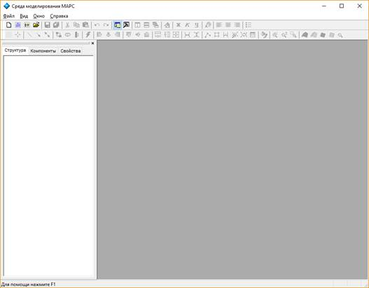
Рисунок 2.2 – Главное окно программы «Среда многоуровневого моделирования МАРС»
Рассмотрим основные принципы работы в многослойном редакторе многоуровневой компьютерной модели и команды меню в порядке их следования. Так как в программе используется многооконный интерфейс, главное меню является переменным в зависимости от того, какое окно является активным. Поэтому также приведем описание пунктов главного меню, которые появляются при активизации определенных окон.
Многослойный редактор обеспечивает формирование многоуровневых компьютерных моделей СТУС, предназначенных для исследования и функционального проектирования сложных технических (технологических) управляемых систем. В нем реализованы стандартные для большинства текстовых и графических редакторов опции – создания новых многоуровневых КЦ, их сохранения в файл и открытия файла с ранее сохраненной моделью.
Редактор включает в себя три слоя, на каждом из которых пользователь формирует соответствующий уровень многоуровневой компонентной цепи с использованием нотаций определенного подъязыка языка многоуровневых КЦ:
– Объектный слой соответствует объектному уровню МКМ СТУС. На нем в нотациях графического языка моделирования УТО формируется модель управляемого технического объекта, компоненты которого соединены неоднородными векторными связями. На ее основе интерпретатором языка УТО формируется вычислительная модель подцепи объектного уровня МКМ, адаптированная к анализу универсальным вычислительным ядром в статическом и динамическом режимах.
– Логический слой соответствует логическому уровню МКМ СТУС. Он предоставляет пользователю возможности формирования сценариев автоматизированных экспериментов, каждый из которых представляет собой цепочку взаимосвязанных компонентов, отображающих операторы и функции языка моделирования алгоритмических конструкций. На основе имитационных КМ сценариев, сформированных на логическом слое, интерпретатором математико-алгоритмических выражений автоматически формируется алгоритмическая КЦ. Её анализ производится имитационным ядром, работа которого основана на алгоритме передачи сообщений.
– Визуальный слой редактора соответствует визуальному уровню МКМ СТУС. На нем из визуальных компонентов формируются лицевые панели виртуальных приборов, а также панели визуализации и интерактивного управления СТУС. Для получения подлежащей визуализации информации компоненты-визуализаторы имеют свои отображения одновременно на визуальном и логическом слоях редактора. А множество компонентов-регуляторов отображаются на двух слоях редактора (визуальном и логическом) для передачи информации с визуального уровня МКМ СТУС на её логический уровень.
Процесс разработки МКМ СТУС в многослойном редакторе включает в себя следующие действия пользователя:
1) выбор определенного компонента из дерева компонентов (1 на рис. 2.3) и его установку в соответствующее место определенного слоя рабочего поля редактора (2 на рис. 2.3), в котором производится формирование многоуровневой компьютерной модели СТУС в графическом виде;
|
Рисунок
2.3
– Главное окно комплекса программ |
2) соединение компонентов, которое производится путем установки связей между их соответствующими узлами или присоединением узла некоторого компонента к существующей связи;
3) параметризация компонентов, которая выполняется с помощью вкладки «Свойства» на панели вкладок (3 на рис. 2.3). Каждому свойству отводится своя строка таблицы. В её левой колонке указывается наименование свойства, а в правой – значение;
4) переключение между слоями многослойного редактора, которое производится с помощью расположенных на панели инструментов (4 на рис. 2.3) кнопок: – объектный; – логический; 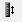 – визуальный.
После того, как модель сформирована на всех слоях многослойного редактора, ее анализ можно запустить, нажав кнопку на панели инструментов (4 на рис. 2.3) или воспользовавшись пунктом «Запуск» меню «Анализ».
Во время анализа многоуровневой КЦ СТУС пользователь может наблюдать результаты анализа модели УТО и значения наблюдаемых характеристик реального объекта, а также имеет возможность варьирования значений определенных параметров модели и управляющих воздействий на визуальном слое редактора.
Таким образом, в многослойном редакторе многоуровневой КЦ СТУС над компонентами, которые могут располагаться на всех его слоях, выполняются следующие опции:
– предоставление информации редактору для формирования дерева компонентов, из которого по указанию пользователя будут устанавливаться определенные компоненты в рабочую область многослойного редактора;
– установка компонента в указанное пользователем место и его прорисовка на предписанных слоях редактора. Компоненты, принадлежащие визуальному или объектному уровням МКМ СТУС, могут иметь свои отображения на визуальном или объектном слоях редактора, а также на его логическом слое;
– возможность изменения размера изображения компонента на соответствующем слое редактора;
|
Рисунок
2.4
– Редактор
|
– инициализация свойств и параметров компонента;
– поворот изображения компонента на определенном слое редактора на 900 по и против часовой стрелки;
– соединение изображений компонентов на логическом и объектном слоях редактора;
– параметризация компонента (изменение его свойств) до и во время выполнения автоматизированного эксперимента;
– инициализация определенных свойств компонента в начале эксперимента и обнуление его определенных свойств в конце эксперимента;
– отображение компонентов на визуальном слое редактора и возможность манипулирования с визуальными образами компонентов-регуляторов во время работы модели;
– сохранение текущего положения компонентов и текущих значений его параметров.
Для выполнения этих опций каждый компонент содержит в себе:
1) информацию для установления в дерево компонентов, которая включает в себя имя компонента; название папки дерева, в которую должен быть установлен компонент; уникальный идентификационный номер компонента; иконку, с которой он будет отображаться в дереве компонентов;
2) сведения о связях компонентов, которые для каждой связи включают ее ориентацию относительно компонента, координаты, её название, тип и порядковый номер связи в локальном координатном базисе компонента;
3) информацию об изображениях компонента на определенных слоях редактора. В случае статического (неизменяемого) изображения оно должно быть прописано один раз. Для визуальных компонентов, предназначенных для визуализации данных измерения и результатов моделирования, изображение должно меняться в зависимости от поступающих данных или действий пользователя на визуальном слое редактора, оно должно быть динамическим. Такие компоненты должны обладать функцией перерисовки компонента;
4) сведения о параметрах компонента, доступных для варьирования пользователю из редактора параметров компонента, приведенного на рис. 2.4. Для каждого параметра указывается его имя, тип и значение по умолчанию;
5) информацию о входных и выходных редакторах, которые должны открываться у некоторых компонентов по двойному щелчку мыши по их изображению на определённом слое редактора.
Меню Файл предназначено для загрузки и записи файлов, получения твердой копии выбранных для печати частей документа или полностью документа, а также для импорта/экспорта файлов в форматах других систем моделирования и программ разработки печатных плат.
1. Подменю Проект содержит основные команды работы с проектом:
1.1 Новый проект... создает новый проект. Вызывает диалоговое окно, в котором запрашивается имя проекта, имя файла проекта, имя каталога для проекта.
1.2 Открыть проект... открывает проект. Вызывается диалоговое окно выбора файла, в котором необходимо указать файл проекта.
1.3 Сохранить проект сохраняет проект под текущим именем.
1.4 Сохранить проект как... сохраняет проект под другим именем. Вызывается диалоговое окно сохранения файла, в котором необходимо указать новое имя или новый путь проекта.
1.5 Закрыть проект закрывает проект. Если проект не сохранен, то программа запрашивает разрешение на сохранение перед закрытием.
1.6 Скопировать проект… копирует текущий проект в другую папку.
2. Подменю Создать содержит команды для создания нового документа (схемы или описания).
3. Команда Создать… предназначена для создания новых документов. При ее активизации вызывается диалог, в котором пользователю предлагается выбрать тип документа, который необходимо создать.
4. Команда Открыть… позволяет открыть документ.
5. Команда Сохранить используется для сохранения документа.
6. Команда Сохранить как… используется для сохранения документа под другим именем.
7. Команда Сохранить как макрокомпонент применяется для сохранения созданной схемы как макрокомпонента с его добавлением в раздел Макрокомпоненты дерева компонентов.
8. Команда Сохранить как проигрыватель ВИП обеспечивает сохранение созданного виртуального прибора в виде файла, открывающегося проигрывателем виртуальных инструментов и приборов (ВИП).
9. Команда Сохранить все используется для сохранения всех открытых документов.
10. Команда Закрыть используется для закрытия документа.
11. Команда Закрыть все используется для закрытия всех открытых документов.
12. Следующие три команды предназначены для вывода содержимого активного документа на принтер:
12.1 Печать… служит для вывода на печать активного документа.
12.2 Предпросмотр изменяет режим отображения документа на режим предварительного просмотра перед печатью.
12.3 Настройка печати позволяет изменить настройки вывода на принтер, а также самого принтера.
13. Следующие команды, начинающиеся с цифры от 1 до 10, позволяют открыть недавно использовавшиеся документы.
14. С помощью команды Выход можно закрыть программу.
Меню Правка появляется только при активизации окна «Схема» и позволяет выполнять команды редактирования схем, таблиц и копирования изображения схемы.
1. Отменить отменяет ранее сделанное действие.
2. Повторить возвращает ранее отмененное действие.
3. Вырезать – команда стирания (вырезания) выделенной части схемы с сохранением ее в буфере обмена. Выделение одного компонента производится щелчком мыши на изображении (значке) компонента. Для выделения части схемы или нескольких компонентов необходимо поставить курсор мыши в левый угол воображаемого прямоугольника, охватывающего выделяемую часть, нажать левую кнопку мыши и, не отпуская ее, протянуть курсор по диагонали этого прямоугольника, контуры которого появляются уже в начале движения мыши, и затем отпустить кнопку. После этих действий выделенные компоненты помечаются ограничивающим прямоугольником либо красного цвета, либо черного.
4. Копировать – команда копирования выделенной части схемы в буфер обмена.
5. Вставить – команда вставки содержимого буфера обмена на рабочее поле документа. Поскольку в программе нет возможности помещать импортируемый фрагмент схемы в точно указанное место, то непосредственно после вставки, когда изображение еще является отмеченным (выделено красным) и может оказаться наложенным на создаваемую схему, его можно переместить в нужное место, ухватившись мышью за один из отмеченных компонентов. Таким же образом перемещаются и предварительно выделенные фрагменты уже имеющейся на рабочем поле схемы.
6. Выделить все – команда выделения всей схемы.
7. Удалить – команда стирания выделенной части схемы.
8. Удалить все – команда стирания всей схемы.
9. Поиск – команда поиска слова или фразы (доступно только для описания).
10. Найти далее – команда поиска следующего найденного слова или фразы (доступно только для описания).
11. Заменить – команда для замены слова или фразы (доступно только для описания).
12. Копировать все изображение – команда копирования изображения схемы в буфер обмена.
13. Копировать часть изображения – команда превращает курсор мыши в крестик, которым по правилу прямоугольника можно выделить нужную часть экрана, после отпускания левой кнопки мыши выделенная часть копируется в буфер обмена, после чего его содержимое может быть импортировано в любое приложение Windows. Эти две команды очень удобны при подготовке отчетов по моделированию, например, при оформлении лабораторных работ.
14. Копировать в библиотеку – позволяет вносить в библиотеку типовых блоков выделенный фрагмент схемы.
15. Перенести в библиотеку – то же что и предыдущая команда, только после копирования в библиотеку, выделенный фрагмент удаляется из схемы.
Меню Вид содержит команды для управления отображением панелей инструментов, а также других панелей (панель структуры проекта, панель вывода дополнительной информации, строки состояния). Опишем подробнее эти команды:
1. Строка состояния позволяет отобразить/скрыть строку состояния.
2. Панель проекта позволяет отобразить/скрыть панель структуры проекта.
3. Панель вывода позволяет отобразить/скрыть панель вывода дополнительной информации.
4. Панели инструментов:
4.1 Стандартная позволяет отобразить/скрыть стандартную панель инструментов.
4.2 Дополнительная позволяет отобразить/скрыть дополнительную панель инструментов.
Для ввода схемы в программу предназначен специальный тип документа – Схема (рис. 2.5). При активизации данного типа документа в главное меню добавляется новый пункт – Редактор схем.
Меню Редактор схем содержит команды работы со схемой. Рассмотрим все его команды и команды его подменю:
1. Тип связи – подменю выбора типа связи.
1.1 Обычная связь – позволяет выбрать тип обычной связи - связь без направления. Данный тип связи предназначен для соединения объектов моделирования (резистор, транзистор и т.д.), визуальных компонентов (кнопки, регуляторы).
1.2 Однонаправленная связь – позволяет выбрать тип однонаправленной связи, который используется для соединения объектов моделирования и при построении блок-схем и различных диаграмм.
1.3 Двунаправленная связь – позволяет выбрать тип двунаправленной связи. Он также используется для соединения объектов моделирования и при построении блок-схем, диаграмм.
2. Слой отображения - подменю выбора слоя, на котором будет отображаться схема:
2.1 Логический слой – позволяет выбрать для отображения логический слой. Данная операция позволяет переключать режим отображения схемы на логический слой. Этот слой предназначен для построения алгоритма моделирования из компонентов.
2.2 Объектный слой – позволяет выбрать для отображения объектный слой. Данная операция позволяет переключать режим отображения схемы на объектный слой. Этот слой предназначен для построения топологической связи между компонентами исследуемого УТО, такие как резистор, конденсатор, транзистор.
2.3 Визуальный слой – позволяет выбрать для отображения визуальный слой. Этот слой предназначен для построения внешнего вида и расположения визуальных компонентов.
Рисунок 2.5 – Окно отображение документа «Схема»
3. Выравнивание – подменю выравнивания объектов схемы. Данное подменю предоставляет доступ к операциям, позволяющим выравнивать положение и размер выделенных компонентов (под активным компонентом понимается компонент, выделенный красной рамкой):
3.1 По левому краю – выравнивает выделенные компоненты левым краем по левому краю активного компонента;
3.2 По центру – выравнивает выделенные компоненты центром по центру активного компонента;
3.3 По правому краю – выравнивает выделенные компоненты правым краем по правому краю активного компонента;
3.4 По верхнему краю – выравнивает выделенные компоненты верхним краем по верхнему краю активного компонента;
3.5 По середине – выравнивает выделенные компоненты серединой по середине активного компонента;
3.6 По нижнему краю – выравнивает выделенные компоненты нижним краем по нижнему краю активного компонента;
3.7 Подогнать ширину – выравнивает выделенные компоненты шириной равной ширине активного компонента;
3.8 Подогнать высоту – выравнивает выделенные компоненты высотой равной высоте активного компонента;
3.9 Подогнать размер – выравнивает выделенные компоненты размером (высотой и шириной) равному размеру активного компонента;
3.10 Распределить по горизонтали – распределяет выделенные компоненты по горизонтали от самого правого до самого левого из выделенных компонентов;
3.11 Распределить по вертикали – распределяет выделенные компоненты по вертикали от самого правого до самого левого из выделенных компонентов.
4. Масштаб – подменю масштабирования схемы. Благодаря данной операции редактора схем возможно увеличение или уменьшение размера схемы. Изменение масштаба в данной версии программы происходит фиксированными значениями: 25%, 50%, 75%, 100%, 150%. При выборе масштаба, отличного от 100%, изменение схемы становится невозможным.
5. Отображать – подменю отображения различных элементов схемы содержит следующие команды:
5.1 Сетка – включает/отключает режим отображения сетки на схеме;
5.2 Обозначения – включает/отключает режим отображения меток обозначения компонентов;
5.3 Номиналы – включает/отключает режим отображения меток номиналов компонентов;
5.4 Метки – включает/отключает режим отображения всех меток на схеме.
6. Центрировать – центрирует схему на основе компонентов;
7. Привязка к сетке – включает/отключает режим привязки к сетке.
8. Свойства – служит для отображения и изменения размеров схемы по вертикали и горизонтали.
Меню Окно содержит следующие команды для управления видом окнами открытых документов:
1. Каскадом упорядочивает все окна каскадом.
2. Упорядочить по горизонтали распределяет открытые окна преимущественно по горизонтали.
3. Упорядочить по вертикали распределяет открытые окна преимущественно по вертикали.
4. Закрыть все закрывает все окна открытых документов.
Последующие пункты активизируют соответствующий документ.
Меню Анализ используется при запуске и останове моделирования, а также для задания параметров моделирования.
1. Запуск – запуск моделирования.
2. Пауза – прерывание моделирования. Остановка эксперимента происходит при повторном нажатии кнопки Запуск.
3. Параметры моделирования – выбор режимов моделирования с установкой необходимых для режима параметров. О возможности выбора режимов анализа читайте в пункте «Задание режимов анализа».
Меню Справка построено стандартным для Windows способом. Оно содержит краткие сведения по всем рассмотренным выше командам, библиотечным компонентам и измерительным приборам, а также сведения о самой программе.
|
Рисунок 2.6 – Вид дерева компонентов |
Дерево компонентов представляет собой иерархический список компонентов, доступных для использования в программе (рис. 2.6). Для удобства все компоненты разделены по различным признакам. Дерево компонентов расположено во вкладке Компоненты панели проекта. Помимо этой вкладки оно содержит вкладки Структура и Свойства.
Работа с деревом компонентов заключается в выборе необходимого компонента. Для того, чтобы найти необходимый компонент, необходимо, уточняя свои требования к компоненту, опускаться вглубь дерева.
Дерево компонентов состоит из ветвей и листьев. Ветвью называется часть дерева, содержащая в себе листья или другие ветви. Листьями называются оконечные пункты дерева. В нашем случае ветвями называются категории компонентов, а листьями являются компоненты.
Для того, чтобы открыть категорию, необходимо нажать мышью на "+", расположенный левее категории, а для того, чтобы закрыть - "-".
Для выбора компонента необходимо указать на него мышью, в результате чего он подсветиться другим цветом.
В дереве компонентов все компоненты распределены согласно подъязыкам языка многоуровневого компьютерного моделирования.
|
Рисунок
2.7
–
Структура библиотеки |
Компоненты языка моделирования технических объектов различной физической природы (электротехника, электроника, электромеханика, САУ и др.) находятся каждый в своем разделе.
Компоненты языка моделирования алгоритмических конструкций помещены в папку Компоненты языка МАК. Эти компоненты располагаются на логическом слое многослойного редактора.
Компоненты языка виртуальных инструментов и приборов помещены в папку Визуальные компоненты.
Разработанные для организации динамических экспериментов виртуальные приборы приводятся в папке Макрокомпоненты.
Папка Библиотека включает в себя типовые блоки компонентов, создаваемые пользователем.
Описанная структура библиотеки моделей компонентов приведена на рис. 2.7.
|
Рисунок 2.8 – Таблица свойств |
С помощью таблицы свойств (рис. 2.8), расположенной во вкладке Свойства панели проекта, изменение множества свойств компонентов происходит одним и тем же способом.
Таблица свойств состоит из двух столбцов - название свойства и его значение. Первый столбец одинаков для всех типов свойств, а второй является индивидуальным для каждого типа свойства. Началом работы со свойством является либо двойное нажатие мыши.
Доступные типы свойств и описание работы с ними приведены в табл. 2.1.
Таблица 2.1
Таблица типов свойств
|
Название типа свойства |
Особенности работы |
|
Логический |
Выпадает список на два пункта – Истина и Ложь, из которых необходимо выбрать один из пунктов, и затем нажать мышью на любом другом месте или клавишу Enter. |
|
Целый |
Вводится или изменяется число и затем необходимо нажать кнопку Enter (после этого программа конвертирует введенный текст в целочисленное число и при необходимости удаляет ненужные символы). |
|
Вещественный |
Вводится или изменяется число и затем необходимо нажать кнопку Enter (после этого программа конвертирует введенный текст в вещественное число и при необходимости удаляет ненужные символы). |
|
Строка |
Изменяем строку и затем нажимаем кнопку Enter. |
|
Список |
Выпадает список, из которого необходимо выбрать один пункт |
|
Файл |
Вызывается диалог открытия файла, в котором необходимо выбрать файл. |
|
Цвет |
Выпадает окно, в котором необходимо указать нажатием мыши нужный цвет. |
|
Градиент |
Вызывается диалоговое окно, в котором необходимо выбрать два цвета, используемые при градиентном переходе цветов изображения компонента на визуальном слое редактора. |
|
Перо |
Вызывается диалоговое окно, в котором выбираются параметры пера. |
|
Кисть |
Вызывается диалоговое окно, в котором выбираются параметры кисти. |
|
Шрифт |
Вызывается диалоговое окно, в котором выбираются параметры шрифта. |
|
Строки |
Вызывается диалоговое окно, в котором можно ввести, вставить, удалить или переименовать строки, состоящие из различных символов. |
Панель инструментов Стандартная содержит кнопки быстрого доступа к операциям с файлом проекта, файлами документов, печатью и отображением основных панелей (табл. 2.2).
Таблица 2.2
Функциональные кнопки панели инструментов Стандартная
|
Изображение |
Название |
Назначение |
|
|
Создать... |
Применяется для создания новых документов, дублирует пункт Создать меню Файл |
|
|
Создать описание |
Применяется для создания нового описания, дублирует пункт Создать описание подменю Создать меню Файл |
|
|
Создать схему |
Применяется для создания новой схемы, дублирует пункт Создать схему подменю Создать меню Файл |
|
|
Открыть... |
Используется для открытия документа, дублирует пункт Открыть меню Файл |
|
|
Сохранить |
Используется для сохранения документа, дублирует пункт Сохранить меню Файл |
|
|
Сохранить все |
Позволяет сохранить все изменения в проекте и во всех открытых документах, дублирует пункт Сохранить все меню Файл |
|
|
Вырезать |
Применяется для вырезания текущей области рабочего документа и ее помещения в буфер обмена, дублирует пункт Вырезать меню Правка |
|
|
Копировать |
Используется для копирования текущей области рабочего документа в буфер обмена, дублирует пункт Копировать меню Правка |
|
|
Вставить |
Позволяет вставить содержимое буфера обмена в текущий рабочий документ при условии, что в буфере обмена часть документа того же типа, дублирует пункт Вставить меню Правка |
|
|
Отменить |
Позволяет отменить последнее действие пользователя, связанное с редактированием текущего документа, дублирует пункт Отметить меню Правка |
|
|
Вернуть |
Позволяет вернуть ранее отмененное действие в текущем документе, дублирует пункт Повторить меню Правка |
|
|
Панель проекта |
Позволяет отобразить/скрыть панель проекта, дублирует пункт Панель проекта меню Вид |
|
|
Панель вывода |
Позволяет отобразить/скрыть панель вывода, дублирует пункт Панель вывода меню Вид |
|
|
Вертикаль |
Позволяет расположить все открытые окна по вертикали, дублирует пункт Упорядочить по вертикали меню Окно |
|
|
Горизонталь |
Позволяет расположить все открытые окна по горизонтали, дублирует пункт Упорядочить по горизонтали меню Окно |
|
|
Каскадом |
Позволяет расположить все открытые окна каскадом, дублирует пункт Каскадом меню Окно |
|
|
Шрифт |
Применяется для задания параметров шрифта в документе «Описание», дублирует пункт Шрифт… меню Шрифт |
|
|
Полужирный |
Позволяет сделать выделенный в «Описании» текст полужирным, дублирует пункт Полужирный меню Шрифт |
|
|
Курсив |
Позволяет сделать выделенный в «Описании» текст курсивом, дублирует пункт Курсив меню Шрифт |
|
|
Подчеркнутый |
Позволяет сделать выделенный в «Описании» текст подчеркнутым, дублирует пункт Подчеркнутый меню Шрифт |
|
|
Цвет шрифта |
Позволяет задать цвет шрифта для выделенного в «Описании» текста, дублирует пункт Цвет … меню Шрифт |
|
|
По левому краю |
Позволяет выравнивать выделенный текст по левому краю, дублирует пункт По левому краю меню Абзац |
|
|
По центру |
Позволяет выравнивать выделенный текст по центру, дублирует пункт По центру меню Абзац |
|
|
По правому краю |
Позволяет выравнивать выделенный текст по правому краю, дублирует пункт По правому краю меню Абзац |
|
|
Список |
Позволяет сделать выделенный текст списком, дублирует пункт Список меню Абзац |
Панель инструментов Дополнительная состоит из двух панелей: Редактор и График.
Панель инструментов Редактор содержит кнопки быстрого доступа к операциям для работы с редактором схем. Перечень кнопок быстрого запуска приведен в табл. 2.3.
Таблица 2.3
Функциональные кнопки панели инструментов Редактор
|
Изображение |
Название |
Назначение |
|
|
Сетка |
Включает/отключает режим отображения сетки на схеме, дублирует пункт Сетка подменю Отображать меню Редактор схем |
|
|
Центрировать |
Позволяет центровать схему на основе компонентов дублирует пункт Центрировать меню Редактор схем, совмещает центр схемы с центром экрана компьютера |
|
|
Простая связь |
Задает режим простой связи – связь без направления, дублирует пункт Простая связь в подменю Тип связи меню Редактор схем |
|
|
Однонаправленная связь |
Задает режим однонаправленной связи «Линия-стрелка», дублирует пункт Однонаправленная связь в подменю Тип связи меню Редактор схем. Стрелка устанавливается в конце связи, проводимой между компонентами |
|
|
Двунаправленная связь |
Задает режим двунаправленной связи «Стрелка-линия-стрелка», дублирует пункт Двунаправленная связь в подменю Тип связи меню Редактор схем |
|
|
Логический слой |
Выбирает для отображения логический слой, дублирует пункт Логический слой в подменю Слой отображения меню Редактор схем |
|
|
Объектный слой |
Выбирает для отображения объектный слой, дублирует пункт Объектный слой в подменю Слой отображения меню Редактор схем |
|
|
Визуальный слой |
Выбирает для отображения визуальный слой, дублирует пункт Визуальный слой в подменю Слой отображения меню Редактор схем |
|
|
Запуск |
Позволяет запустить набранную в редакторе схему на моделирование, дублирует пункт Запуск меню Анализ |
|
|
По левому краю |
Выравнивает выделенные компоненты левым краем по левому краю активного компонента, дублирует пункт По левому краю подменю Выравнивание меню Редактор схем |
|
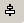 |
По центру |
Выравнивает выделенные компоненты центром по центру активного компонента, дублирует пункт По центру подменю Выравнивание меню Редактор схем. |
|
|
По правому краю |
Выравнивает выделенные компоненты правым краем по правому краю активного компонента, дублирует пункт По правому краю подменю Выравнивание меню Редактор схем |
|
|
Выравнивает выделенные компоненты верхним краем по верхнему краю активного компонента, дублирует пункт По верхнему краю подменю Выравнивание меню Редактор схем |
|
|
|
Выравнивает выделенные компоненты серединой по середине активного компонента, дублирует пункт По середине подменю Выравнивание меню Редактор схем |
|
|
|
По нижнему краю |
Выравнивает выделенные компоненты нижним краем по нижнему краю активного компонента, дублирует пункт По нижнему краю подменю Выравнивание меню Редактор схем |
|
|
Подогнать ширину |
Выравнивает выделенные компоненты шириной, равной ширине активного компонента, дублирует пункт Подогнать ширину подменю Выравнивание меню Редактор схем |
|
|
Подогнать высоту |
Выравнивает выделенные компоненты высотой, равной высоте активного компонента, дублирует пункт Подогнать высоту подменю Выравнивание меню Редактор схем |
|
|
Подогнать размер |
Выравнивает выделенные компоненты размером (высотой и шириной) равным размеру активного компонента, дублирует пункт Подогнать размер подменю Выравнивание меню Редактор схем |
|
|
Распределить по горизонтали |
Выделенные компоненты распределяются по горизонтали от самого правого до самого левого из выделенных компонент, дублирует пункт Распределить по горизонтали подменю Выравнивание меню Редактор схем |
|
|
Распределить по вертикали |
Выделенные компоненты распределяются по вертикали от крайнего правого до крайнего левого из выделенных компонент, дублирует пункт Распределить по вертикали подменю Выравнивание меню Редактор схем |
Панель инструментов График содержит кнопки быстрого доступа к операциям для работы с графиком. Перечень кнопок быстрого доступа приведен в табл. 2.4:
Таблица 2.4
Перечень функциональных кнопок панели инструментов График
|
Изображение |
Пункт меню |
Назначение |
|
|
Отображать метки |
Управляет изображением точек, по которым строится график, дублирует пункт Отображать метки меню График |
|
|
Сетка |
Отображает/скрывает масштабную сетку, дублирует пункт Сетка меню График |
|
|
Линейные метки |
Отображает/скрывает линейные сканеры, дублирует пункт Отображать линейные метки меню График |
|
|
В одном масштабе |
Управляет режимом масштабирования графиков. Включает/выключает режим отображения всех графиком в одном масштабе, дублирует пункт В одном масштабе меню График |
|
|
Сглаживать сплайном |
Включает/выключает режим кубической интерполяции, позволяющей сглаживать графики, дублирует пункт Сглаживать сплайном меню График |
|
|
Отображать окно "Обозначение" |
Показывает/скрывает окно Обозначение, дублирует пункт Отображать окно «Обозначение» меню График |
|
|
Свойства |
Установка свойств графика, дублирует пункт Свойства меню График |
|
|
Начальный масштаб |
Установка начального значения масштаба, дублирует пункт Начальный размер меню График |
|
|
Режим точечного масштабирования |
Включение/отключение режима точечного масштабирования, дублирует пункт Режим точечного масштабирования меню График |
|
|
Режим прямоугольного масштабирования |
Включение/отключение режима прямоугольного масштабирования, дублирует пункт Режим прямоугольного масштабирования меню График |
Для создания схемы необходимо нажать кнопку на панели инструментов или в главном меню в подменю Создать меню Файл выбрать пункт Создать схему. В результате в рабочей области окна программы появится окно, готовое для набора схемы (рис. 2.9).
а) б)
Рисунок 2.9 – Создание схемы в СМ МАРС
а) с помощью пункта меню Создать схему
б) с помощью кнопки Создать схему на панели инструментов Стандартная
Для открытия существующего файла схемы необходимо нажать кнопку  или в главном меню в подменю Файл выбрать пункт
Открыть… В результате на экран будет выведено диалоговое окно
Открыть (рис. 2.10). В нижней части этого окна расположен выпадающий список
Тип файлов, в котором необходимо выбрать строку
Файлы схем (*.mrscir).
Затем в основной части этого диалога выбрать интересующую схему. Если
файл отсутствует в списке, то воспользуйтесь выпадающим списком
Папка.
или в главном меню в подменю Файл выбрать пункт
Открыть… В результате на экран будет выведено диалоговое окно
Открыть (рис. 2.10). В нижней части этого окна расположен выпадающий список
Тип файлов, в котором необходимо выбрать строку
Файлы схем (*.mrscir).
Затем в основной части этого диалога выбрать интересующую схему. Если
файл отсутствует в списке, то воспользуйтесь выпадающим списком
Папка.
Рисунок 2.10 – Окно для открытия файла схемы
После того как файл выбран, необходимо нажать кнопку Открыть. В результате в рабочей области окна программы появится окно открытой схемы.
Для закрытия схемы необходимо нажать кнопку в правом верхнем углу окна схемы либо в меню Файл выбрать команду Закрыть.
Работа с редактором состоит из следующих основных этапов:
– формирование и параметризация КМ исследуемого технического объекта на объектном уровне многоуровневой компьютерной модели;
– формирование КЦ сценария исследования и проектирования ТО на логическом уровне многоуровневой компьютерной модели;
– разработка панели визуализации и интерактивного управления на визуальном уровне многоуровневой компьютерной модели;
– параметризация компонентов;
– удаление компонентов.
Набор схемы состоит из операций:
– нанесение компонентов на все урони формируемой многоуровневой компьютерной модели;
– создание связей между компонентами на объектном и логическом уровнях многоуровневой компьютерной модели;
– организация межуровневых взаимодействий с помощью измерительных компонентов, компонентов-атрибутов, компонентов-визуализаторов и компонентов-регуляторов;
– создание узлов.
Параметризация компонентов заключается в изменении или присвоении нового значения свойств компонентов. Данная операция производится с помощью таблицы свойств.
Базовые операции работы с компонентами:
– выделение компонентов;
– выравнивание компонентов;
– параметризация компонентов;
– удаление компонентов.
Нанесение компонентов на слои схемы в редакторе. В общем случае, процесс создания схемы начинается с размещения на рабочем поле компонентов исследуемой схемы в соответствии с подготовленным эскизом. Доступные компоненты располагаются в дереве компонентов (рис. 2.6) обычно слева от рабочего поля (устанавливается в любое место перетаскиванием стандартным способом - за шапку заголовка). Для открытия нужной ветви необходимо подвести курсор мыши к соответствующей ветви и нажать на «+» один раз, после чего данная ветвь будет открыта, затем выберите необходимый компонент, кликнув левой кнопкой мыши по его изображению в дереве компонентов, и нанесите его на схему, кликнув левой кнопкой мыши в необходимое место схемы. Затем на схеме, в которую необходимо вставить компонент, указываем мышью прямоугольник, задающий координаты будущего компонента (либо просто указываем координату верхнего угла и отпускаем левую кнопку мыши). Формируемый прямоугольник растягиваем от левого верхнего к его правому нижнему углу. Для этого необходимо нажать левую кнопку мыши в первом углу прямоугольника и, не отпуская, передвинуть курсор мыши до следующего узла прямоугольника, затем отпустить левую кнопку мыши.
Поэтапно рассмотрим эту операцию на рисунках:
1. Необходимо выделить подлежащий установлению компонент в дереве компонентов (рис. 2.11):
Рисунок 2.11 – Выделение компонента в дереве
2. Для установки компонентов языка моделирования технических объектов и языка моделирования алгоритмических конструкций достаточно кликнуть мышку в определенное место и в этом месте будет установлен компонент (рис. 2.12, а, б) именно на том слое, которому он принадлежит. Компоненты язык моделирования технических объектов будут установлены на объектном слое редактора (рис. 2.12, а), а компоненты языка моделирования алгоритмических конструкций – на логическом слое редактора (рис. 2.12, б).
а) б)
Рисунок 2.12 – Установка компонентов
а) установка компонента языка моделирования ТО на объектный слой многослойного редактора
б) установка компонента языка МАК на логический слой многослойного редактора
a. При установке визуальных компонентов [TG2] необходимо, аналогично, щелкнуть мышью на поле визуального слоя, либо указать мышью прямоугольник координат компонента (рис. 2.13) на визуальном слое редактора, так как большинство этих компонентов имеют динамический размер
Рисунок 2.13 – Указание размера компонента на схеме
После отпускания мыши в одном из углов в получившийся прямоугольник будет установлен визуальный компонент (рис.2.14).
Рисунок 2.14 – Установка компонента на визуальном слое многослойного редактора
Если в схеме уже присутствует необходимый компонент, то для копирования необходимо выделить компонент, подлежащий копированию, скопировать его в буфер обмена с помощью кнопки Копировать или Вырезать . Кнопке Копировать соответствует сочетание клавиш Ctrl+C, а кнопке Вырезать – сочетание Ctrl+X. Для вставки компонента из буфера обмена можно воспользоваться кнопкой Вставить или воспользоваться сочетанием клавиш Ctrl+V.
Установка компонентов для организации межуровневых взаимодействий. Если устанавливается компонент, реализующий межуровневые взаимодействия, то его изображение одновременно появляется на двух слоях многослойного редактора:
– измерительные компоненты языка моделирования ТО появляются одновременно на объектном (рис. 2.15, а) и логическом (рис. 2.15, б) слоях редактора;
а) б)
Рисунок 2.15 – Измерительный компонент – амперметр
а) отображение на объектном слое редактора
б) отображение на логическом слое редактора
– компоненты языка ВИП – компоненты-визуализаторы результатов моделирования (рис. 2.16) и компоненты-регуляторы (рис. 2.17) имеют свои отображения одновременно на визуальном и логическом слоях редактора.
а) б)
Рисунок 2.16 – Компонент-визуализатор
а) отображение на визуальном слое редактора
б) отображение на логическом слое редактора
а) б)
Рисунок 2.17 – Компонент-регулятор
а) отображение на визуальном слое редактора
б) отображение на логическом слое редактора
Устанавливать визуальные компоненты лучше на визуальном слое редактора, а измерительные компоненты на объектном уровне. После того, как они были установлены, можно воспользоваться кнопкой 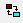 на панели инструментов для перехода на логический слой, где затем осуществить его соединение с другими компонентами языка МАК.
|
Рисунок 2.18 – Выделение одного компонента на схеме
|
Выделение компонентов. Для выделения одного компонента достаточно подвести курсор к компоненту и нажать левую кнопку мыши. После выделения компонент обрамляется красной рамкой. Для ряда компонентов, рамка которых обрамлена прямоугольниками (рис. 2.18), доступна функция изменения размера компонентов (преимущественно на визуальном слое редактора).
Для изменения размера компонента сначала необходимо выделить его, затем подвести курсор к одному из прямоугольников, нажать левую кнопку мыши и, не отпуская ее, передвинуть на необходимое расстояние.
Для выделения нескольких компонент необходимо, удерживая кнопку Shift, левой кнопкой мыши по очереди указать на каждый компонент, необходимый для выделения (рис. 2.19).
Для выделения компонентов, расположенных в пределах определенного прямоугольника, необходимо подвести курсор к одному из углов этого прямоугольника, нажать левую кнопку мыши и, не отпуская, переместить курсор мыши в противоположный угол прямоугольника, после чего отпустить левую кнопку мыши.
При множественном выделении активный компонент выделяется красной рамкой, а остальные выделенные компоненты выделяются черной рамкой. Относительно активного компонента, выделенного красной рамкой, выполняются команды выравнивания и центрирования. В этом случае этот компонент остаётся на своём месте, а остальные компоненты перемещаются в соответствии с командой.
Рисунок 2.19 – Множественное выделение компонентов
Удаление компонентов. Для удаления компонента достаточно подвести курсор мыши к компоненту, нажать правую кнопку мыши и в выпавшем меню выбрать команду Удалить. Также выделенный компонент можно удалить, нажав на клавиатуре клавишу Delete.
Связи между компонентами образуются на объектном и логическом слоях редактора.
Для создания связи необходимо:
1. Выбрать тип связи.
2. Подвести указатель мыши к узлу компонента до его подсвечивания красным цветом. В случае, если необходимо начать связь не от вывода компонента, а от одиночного узла на схеме необходимо нажать клавишу Ctrl и не отпускать до выполнения шага 3.
3. Нажать левую кнопку мыши.
4. Удерживая левую кнопку мыши, передвинуть указатель мыши на другой узел (второй конец связи) до подсветки узла красным цветом. В случае если необходимо присоединить данную связь к уже созданной связи, необходимо также подвести курсор мыши к месту планируемого подсоединения к связи до окраски красным цветом.
5. Отпустить левую кнопку мыши.
Типы связей, выбираемые в первом пункте перечня шагов, влияют только на изображение связи в редакторе. При этом предусмотрены следующие типы связей:
– простая связь. Для ее установки перед прокладыванием связи между компонентами должна быть нажата кнопка Простая связь панели инструментов Редактор;
– однонаправленная связь. Для ее установления на панели инструментов Редактор должен быть нажата кнопка Однонаправленная связь . В этом случае на конце прокладываемой между компонентами связи появляется стрелка, указывающая направление «от связи к компоненту».
|
Рисунок
2.20
– Окно выбора цвета |
– двунаправленная связь. Ее установка осуществляется при нажатой кнопке Двунаправленная связь панели инструментов Редактор.
Для удаления связи достаточно подвести курсор мыши к связи до ее подсветки красным цветом. Затем нажать правую кнопку мыши и в выпавшем меню выбрать команду Удалить связь.
Для изменения цвета связи достаточно подвести курсор мыши к связи до ее подсветки красным цветом. Затем нажать правую кнопку мыши и в выпавшем меню выбрать команду Цвет. В появившемся окне (рис. 2.20) следует выбрать цвет, которым должна быть изображена связь.
Для изменения типа связи достаточно подвести курсор мыши к связи до ее подсветки красным цветом, кликнув правой кнопкой мыши будет выведено меню, в котором можно будет изменить тип выделенной связи.
Для просмотра всего соединения, образованного проводниками (связями) и одиночными узлами необходимо при наведении курсора мыши на связь удерживать клавишу Ctrl.
Для удаления всего соединения достаточно подвести курсор мыши к любой связи этого соединения до ее подсветки красным цветом. Затем нажать правую кнопку мыши и в выпавшем меню выбрать команду Удалить всю связь, включая узлы.
Для создания узла на объектном или логическом уровне редактора необходимо:
1. Подвести указатель мыши к узлу компонента до его подсвечивания красным цветом;
2. Нажать левую кнопку мыши;
3. Не отпуская левую кнопку мыши передвинуть указатель мыши до связи, на которой необходимо создать узел (второй конец связи) до подсветки связи красным цветом;
4. Отпустить левую кнопку мыши;
Для создания одиночного узла достаточно на месте, где необходимо создать узел, нажать правую кнопку мыши и в появившемся меню выбрать команду Создать узел.
Для переноса одиночного узла необходимо нажать на узле левую кнопку мыши и, не отпуская, перетащить узел в нужное место.
Для создания проводника, начиная от одиночного узла, необходимо нажать кнопку Ctrl.
Для удаления узла достаточно подвести курсор мыши к узлу до его подсветки красным цветом. Затем нажать правую кнопку мыши и в выпавшем меню выбрать команду Удалить узел.
|
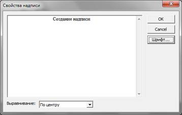 Рисунок 2.21 – Диалоговое окно Свойства надписи |
Для создания надписи на любом слое редактора достаточно на месте, где необходимо создать надпись, нажать правую кнопку мыши и в появившемся меню выбрать команду Создать надпись. В результате на экран будет выведено диалоговое окно Свойства надписи (рис. 10.13) с текстовым полем, в которое необходимо ввести текст надписи. В нижней части диалогового окна расположен выпадающий список Выравнивание, в котором можно выбрать тип выравнивания надписи. С помощью кнопки Шрифт возможно вызвать окно задания параметров шрифта надписи.
Для изменения текста созданной ранее надписи достаточно подвести курсор мыши к надписи до ее подсветки красным цветом. Затем нажать правую кнопку мыши и в выпавшем меню выбрать команду Изменить. На экран будет выведено диалоговое окно Свойства надписи.
Для переноса надписи в другое место необходимо нажать на надписи левую кнопку мыши и, не отпуская, перетащить надпись в нужное место.
Для удаления надписи достаточно подвести курсор мыши к надписи до ее подсветки красным цветом. Затем нажать правую кнопку мыши и в выпавшем меню выбрать команду Удалить.
Таблица 3.1
Основные математические компоненты
|
Название и обозначение |
Визуальный вид компонента на логическом уровне |
Математическая модель |
Типы данных и условия |
|
Источник целого значения |
|
|
– целочисленное значение |
|
Источник вещественного значения |
|
|
– вещественное значение |
|
Сложение |
|
|
– могут быть целочисленными, вещественными или комплексными |
|
Вычитание |
|
|
|
|
Умножение |
|
|
|
|
Деление |
|
|
|
|
Возведение в степень |
|
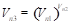 |
|
|
Квадратный корень |
|
|
|
|
Экспонента |
|
|
|
|
Натуральный логарифм |
|
|
|
|
Десятичный логарифм |
|
|
|
|
Инкремент |
|
|
– целочисленные значения |
|
Декремент |
|
|
|
|
Сумма |
|
|
|
|
Сумматор N-входовой |
|
|
|
|
Факториал |
|
|
Таблица 3.2
Тригонометрические функции
|
Название и обозначение |
Визуальный вид компонента на логическом уровне |
Математическая модель |
Типы данных и условия |
|
Синус sin |
|
|
– могут быть вещественными или комплексными |
|
Косинус cos |
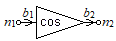 |
|
|
|
Тангенс tg |
|
|
|
|
Котангенс ctg |
|
|
|
|
Секанс sec |
|
|
|
|
Косеканс csc |
|
|
Таблица 3.3
Обратные тригонометрические функции
|
Название и обозначение |
Визуальный вид компонента на логическом уровне |
Математическая модель |
Типы данных и условия |
|
Арксинус arcsin |
|
|
|
|
Арккосинус arccos |
|
|
|
|
Арктангенс arctg |
|
|
|
|
Арккотангенс arcctg |
|
|
|
|
Арксеканс arcsec |
|
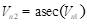 |
|
|
Арккосеканс arccsc |
|
|
|
Таблица 3.4
Гиперболические функции
|
Название и обозначение |
Визуальный вид компонента на логическом уровне |
Математическая модель |
Типы данных и условия |
|
Синус гиперболический |
|
|
|
|
Косинус гиперболический |
|
|
|
|
Тангенс гиперболичекий |
|
|
|
|
Котангенс гиперболический |
|
|
|
|
Секанс гиперболический |
|
|
|
|
Косеканс гиперболический |
|
|
|
Таблица 3.5
Обратные гиперболические функции
|
Название и обозначение |
Визуальный вид компонента на логическом уровне |
Математическая модель |
Типы данных и условия |
|
Арксинус гиперболический |
|
|
в общем случае комплексные |
|
Арккосинус гиперболический |
|
|
|
|
Арктангенс гиперболический |
|
|
|
|
Арккотангенс гиперболический |
|
|
|
|
Арксеканс гиперболический |
|
|
|
|
Арккосеканс гиперболический |
|
|
Таблица 3.6
Математические действия с комплексными числами
|
Название и обозначение |
Визуальный вид компонента на логическом уровне |
Математическая модель |
Типы данных и условия |
|
Источник комплексной константы |
|
|
a, b – действительные числа |
|
Источник комплексной переменной |
|
|
– действительные числа; – комплексное число |
|
Вещественная часть |
|
|
– комплексное число; – вещественное число |
|
Мнимая часть |
|
|
– комплексное число; – вещественное число |
|
Модуль |
|
|
– комплексное число; – вещественное число |
|
Аргумент |
|
|
– комплексное число; – вещественное число, заданное в радианах |
|
Комплексно-сопряженное |
|
|
– комплексные числа |
Таблица 3.7
Компоненты операторов сравнения
|
Название и обозначение |
Визуальный вид компонента на логическом уровне |
Математическая модель |
Типы данных и условия |
|
|
|
– числовые значения вещественного типа данных; – булевый тип данных |
|
|
Больше «» |
|
|
|
|
Меньше или равно «» |
|
|
|
|
Больше или равно «» |
|
|
|
|
Равно «» |
|
|
|
|
Не равно «» |
|
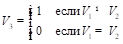 |
Таблица 3.8
Компоненты логических операторов
|
Название и обозначение |
Визуальный вид компонента на логическом уровне |
Математическая модель |
Типы данных и условия |
|
Источник логического значения |
|
|
– значение логического типа данных |
|
Отрицание |
|
|
– значения логического типа данных |
|
Конъюнкция (логическое И) |
|
|
– значения логического типа данных |
|
Дизъюнкция (логическое ИЛИ) |
|
|
Таблица 3.9
Алгоритмические компоненты
|
Название и обозначение |
Визуальный вид компонента на логическом уровне |
Математическая модель |
Типы данных и условия |
|
Накопитель |
|
|
Работает в двух режимах: 1) По первому сигналу – пропускает все данные, если , 2) Ждать сигнала – принимает данные по и отправляет последние, когда придет сигнал . |
|
Условное присваивание |
|
|
Присваивает переменной первое из значений , для которого 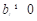, |
|
Ветвление |
|
|
– одного любого типа данных; – любого численного типа данных |
|
Номер минимального элемента |
|
|
|
|
Логический мультиплексор |
|
|
На выход передается значение, принятое с узла, номер которого получен со связи |
|
Логических демультиплексор |
|
|
|
Таблица 3.10
Блоки обработки данных
|
Название и обозначение |
Визуальный вид компонента на логическом уровне |
Математическая модель |
Типы данных и условия |
|
Максимум |
|
|
|
|
Минимум |
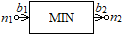 |
|
|
|
Время наступления максимума |
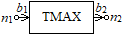 |
|
Здесь и далее функция будет означать время наступления события |
|
Время наступления минимума |
|
|
|
|
Локальный максимум |
|
|
Находит последний локальный максимум |
|
Локальный минимум |
|
|
Находит последний локальный минимум |
|
Среднее значение |
|
|
|
|
Действующее значение |
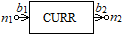 |
|
|
|
Амплитуда гармоники |
|
|
Номер гармоники задается в свойствах компонента |
|
Фаза гармоники |
|
|
|
|
Частота сигнала |
|
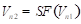 |
|
|
Период сигнала |
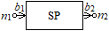 |
|
|
|
Фазовый сдвиг |
|
|
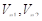 – временные сигналы, снятые с измерительных компонентов |
|
Построитель мощности |
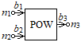 |
|
|
|
Установившееся значение |
|
|
Если , процесс определения установившегося значения начинается заново |
|
Время переходного процесса |
|
|
|
|
Перерегулирование |
|
|
|
Таблица 4.1
Визуальные компоненты: Кнопки
|
Название |
Представление на логическом слое |
Представление на визуальном слое |
Атрибуты компонента |
Принимаемое (отправляемое) сообщение |
|
Кнопка с изображением |
|
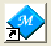 |
Количество состояний; Текущее состояние; Изображение при выключенном состоянии; Изображение при включенном состоянии. |
Принимает сообщение об изменении состояния логического типа; Посылает сообщение другим компонентам при изменении состояния |
|
Кнопка с надписью |
|
|
Надпись; Количество состояний; Текущее состояние; Цвет фона 1; Цвет фона 2; Направление градиента. |
Принимает сообщение об изменении состояния логического типа; Посылает сообщение другим компонентам при изменении состояния |
|
Кнопка-переключатель |
|
|
Состояние; Количество состояний; Текущее состояние; Цвет фона; Цвет переключателя 1; Цвет переключателя 2; Положение (вертикально или горизонтально) |
Принимает сообщение об изменении состояния логического типа; Посылает сообщение другим компонентам при изменении состояния. |
|
Круглая кнопка |
|
|
Надпись; Количество состояний; Текущее состояние; Цвет кнопки в положении «Выключено»; Цвет кнопки в положении «Включено» |
Посылает сообщение другим компонентам при изменении состояния путем нажатия на кнопку мышью; Принимает сообщение об изменении состояния логического типа |
|
Флажковый переключатель |
|
|
Надпись; Количество состояний (одно или два); Текущее состояние; Положение размещения флажка |
Отправляет сообщение подключенным к узлу N1 компонентам, в котором содержится информация о положении флажка |
|
Пружинный переключатель |
|
|
Надпись; Количество состояний; Текущее состояние; Горизонтально |
Отправляет сообщение подключенным к узлу N1 компонентам, в котором содержится информация о положении переключателя |
|
Флажок |
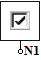 |
|
Надпись; Количество состояний; Текущее состояние; |
Отправляет сообщение подключенным к узлу N1 компонентам, в котором содержится информация о состоянии флажка |
|
Группа радиокнопок |
|
|
Количество кнопок; Название каждой кнопки |
На узел N1 отправляет сообщение с номером радиокнопки, которая была выбрана пользователем |
Таблица 4.2
Визуальные компоненты: Индикаторы
|
Название |
Представление на логическом слое |
Представление на визуальном слое |
Атрибуты компонента |
Принимаемое (отправляемое) сообщение |
|
Стрелочник |
|
|
Минимальное значение; Максимальное значение; Текущее значение; Количество и видимость основных (с цифрами) и дополнительных (без цифр) меток; Шрифт; Цвет текста; Радиус шкалы; Цвет фона |
Принимает сообщение на узел N1 и устанавливает стрелку на значение, принятое в сообщении вещественного или целочисленного типа |
|
Регулятор |
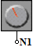 |
|
Минимальное значение; Максимальное значение; Текущее значение; Количество и видимость основных (с цифрами) и дополнительных (без цифр) меток; Шрифт; Цвет текста; Радиус шкалы; Цвета фона, ручки, шкалы, меток, указателя |
Позволяет пользователю управлять круговым регулятором и отправляет сообщение на узел N1 с вещественным значением, соответствующим текущему положению рабочего органа регулятора |
|
Измеритель |
|
|
Минимальное значение; Максимальное значение; Текущее значение; Количество и видимость основных (с цифрами) и дополнительных (без цифр) меток; Шрифт.
|
Принимает сообщение на узел N1 и устанавливает стрелку на значение, принятое в сообщении вещественного или целочисленного типа |
|
Прогресс |
|
|
Минимальное значение; Максимальное значение; Текущее значение; Количество и видимость основных (с цифрами) и дополнительных (без цифр) меток; Шрифт; Цвет индикации пустой области; Цвет индикации заполненной области |
Позволяет визуализировать вещественное значение, принятое на узел N1, путем заполнения области от минимального до текущего значения |
|
Термометр |
|
|
Минимальное значение; Максимальное значение; Текущее значение; Количество и видимость основных (с цифрами) и дополнительных (без цифр) меток; Шрифт; Цвет индикации пустой области; Цвет индикации заполненной области
|
Позволяет визуализировать в виде термометра вещественное значение, принятое на узел N1 |
|
Эквалайзер |
|
|
Минимальное значение; Максимальное значение; Текущее значение; Количество и видимость меток; Цвета заполненных и незаполненных меток; Положение (вертикально или горизонтально) |
Предназначен для визуализации в виде эквалайзера принятого на узел N1 вещественного значения |
Таблица 4.3
Визуальные компоненты: Регуляторы
|
Название |
Представление на логическом слое |
Представление на визуальном слое |
Атрибуты компонента |
Принимаемое (отправляемое) сообщение |
|
Регулятор с прямоугольным бегунком |
|
|
Минимальное значение; Максимальное значение; Текущее значение; Количество и видимость основных (с цифрами) и дополнительных (без цифр) меток; Шрифт; Цвет текста, фона бегунка
|
Предназначен для задания пользователем с помощью органа управления (бегунка синего цвета) вещественного значения и его передачи другим компонентам с помощью узла N1 |
|
Регулятор с треугольным бегунком |
|
|
Минимальное значение; Максимальное значение; Текущее значение; Количество и видимость основных (с цифрами) и дополнительных (без цифр) меток; Шрифт; Цвет текста, фона бегунка
|
Предназначен для задания пользователем с помощью органа управления (бегунка синего цвета) вещественного значения и его передачи другим компонентам с помощью узла N1 |
Таблица 4.4
Визуальные компоненты: Прочие
|
Название |
Представление на логическом слое |
Представление на визуальном слое |
Атрибуты |
Принимаемое (отправляемое) сообщение |
|
Цифровое табло |
|
|
Вид числа (целое, вещественное или комплексное число); Формат числа (с фиксированной или с плавающей запятой); Количество знаков после запятой; Начальное значение действительной и мнимой части числа |
Предназначено для визуализации целых, вещественных и комплексных чисел, принимаемых на узел N1 |
|
Надпись |
- |
|
Цвет и фон рамки, цвет и шрифт текста, текст |
Предназначена для визуализации статической текстовой информации на лицевой панели прибора |
|
Комбинированный список |
|
|
Шрифт, набор строк, активная строка |
Позволяет выбрать из списка один элемент и передает его номер на узел N1 |
|
Цифровое табло со спином |
|
|
Минимальное, максимальное и текущее значения, шрифт |
Позволяет задавать целочисленные значения в пределах от минимального до максимального значения и передавать его с помощью узла N1 |
|
Осциллограф |
|
|
Цвет фона, сетка, метки, По X, По Y, Цвет сетки, цвет меток, количество точек в развертке, усиление по Y, смещение по Y |
В пакетном режиме позволяет визуализировать временные характеристики, принимаемые с помощью узлов N1 и N2. |
|
Рисунок 4.1 – Компонент «График»
|
Компонент «График» (рис. 4.1) предназначен для отображений массивов данных (зависимостей) в графическом виде (в форме графиков, диаграмм, годографов и т.д.). Принадлежа визуальному уровню многоуровневой КЦ СТУС, на логическом слое редактора он имеет свое отображение в виде компонента с переменным числом связей.
Специальный тип документа – График (рис. 4.2) предназначен для вывода данных в виде различных кривых или в виде годографов с использованием усовершенствованного метода интерполяции, прекрасно работающего и на большом количестве точек. При активизации окна «График» в главном меню появляется новый пункт – График.
Рисунок 4.2 – Окно График
Меню График, реализованное в редакторе среды многоуровневого компьютерного моделирования, содержит следующие команды управления графическим выводом выходной информации:
1. Отображать метки – управляет отображением точек, по которым строится график. При включенном режиме эти точки обводятся дополнительной окружностью или другой фигурой (в зависимости от установок). При отключенном режиме точки, по которым строиться график, не выделяются.
2. Отображать линейные метки – управляет отображением линейных сканеров. Для изменения положения сканеров необходимо при нажатой клавише Ctrl левой кнопкой мыши (первый сканер - левый) или правой (второй сканер - правый) перетащить сканер на необходимую позицию. В окне Обозначение будет происходить отображение значений характеристик, соответствующих положению сканеров первого и второго, а также разностного значения между показаниями двух сканеров. Для того чтобы увидеть эти значения, необходимо изменить размер окна Обозначение.
3. В одном масштабе - управляет режимом масштабирования графиков. При выключенном режиме единого масштаба каждый график масштабируется на все окно, иначе все графики строятся в одном масштабе.
4. Сглаживать сплайном - включает/выключает режим кубической интерполяции. При включенном режиме производится кубическая интерполяция графика. При отключенном режиме точки просто
соединяются по прямой линии, в этом случае график рисуется быстрее.
5. Отображать окно Обозначение - показывает/скрывает окно Обозначение. При включенном режиме окно Обозначение отображается в окне графика. При отключенном режиме - скрыто.
6. Сетка - отображает/скрывает масштабную сетку. При включенном режиме отображается масштабная сетка и масштабные метки. При отключенном режиме отображение графика производится без линий масштабной сетки и без масштабных меток. В случае если не выбран активный график в окне Обозначение, то масштабные метки выводятся только при включенном режиме единого масштаба. При выбранном активном графике отображаются масштабные метки и значения в соответствии с активным графиком.
7. Свойства - устанавливает свойства графика.
8. Начальный размер - устанавливает начальное значение масштаба. Это необходимо для возврата в исходное масштабирование, после отказа от дополнительного масштабирования.
9. Режим точечного масштабирования - управляет включением/отключением данного режима. При включенном режиме масштабирование изображения происходит с помощью нажатий левой и правой кнопок мыши. Для увеличения определенной части графика необходимо в точке этой части нажать правую кнопку мыши. Для уменьшения достаточно в любом месте графика нажать левую кнопку мыши. При увеличении или уменьшении точка, на которую указывает мышь, остается неподвижной, т.е. увеличение или уменьшение производится относительно точки, в которой нажата левая или правая кнопка мыши.
10. Режим прямоугольного масштабирования - управляет включением/отключением данного. При включенном режиме масштабирование изображения происходит в соответствии с прямоугольником, указанным с помощью мыши. Для увеличения определенной прямоугольной части графика необходимо нажать левую кнопку мыши в верхнем углу прямоугольника, и, не отпуская, перевести указатель мыши в противоположный угол. После этого график масштабируется таким образом, что видна только прямоугольная область графика, которая указана с помощью мыши.
11. Импорт данных - аналогична одноименной команде из меню Таблица.
Окно Обозначение (рис 4.3) предназначено для:
– отображения соответствия линии графика названию;
– выбора активного графика;
– управления видимостью графиков;
– выбора типа линии, меток, цвета графика.
Рисунок 4.3 – График с окном Обозначение
Для выбора графика, по масштабу которого будут отображаться масштабные метки, предназначена первая колонка элементов управления. Для того чтобы выбрать активный график, достаточно щелкнуть мышкой на необходимый кружок.
Для управления видимостью графиков предназначена вторая колонка элементов управления - флажки. Поставленный флажок соответствует отображению графика, а снятый – скрытию.
Третья колонка отображает тип линии графика. Для изменения типа линии необходимо щелкнуть левой кнопкой мыши, в результате чего будет вызвано диалоговое окно Выбор характеристик линии.
И в последней колонке располагаются имена графиков.
Диалоговое окно Выбор характеристик линии (рис. 4.4) предназначено для выбора типа линии, меток и цвета графика.
Рисунок 4.4 – Окно Выбор характеристик линии
В данном диалоговом окне располагаются следующие элементы:
– кнопка выбора цвета линии;
– группа кнопок тип линии, которая позволяет указать тип и толщину линии (толщина используется только при сплошном типе линии);
– группа кнопок тип меток, которая позволяет выбрать различную форму меток графика.
После выбора необходимых параметров линии нужно нажать кнопку ОК. Для отмены изменений – Cancel.
Таблица 5.1
Компоненты-источники энергии и сигналов
|
Название |
Графическое изображение на объектном слое редактора |
Математическая модель |
Параметры |
|
Источник постоянного напряжения |
|
,
|
Е – амплитуда, В |
|
Источник постоянного тока |
|
,
|
I – амплитуда, А |
|
Источник синусоидального (полый период, положительный полупериод, отрицательный полупериод – варьируется с помощью комбинированного списка «Тип источника»)
|
|
Во временной области
В частотной области
|
А – амплитуда, В; w – частота, рад/с; T0 – время задержки синусоиды; j – угол сдвига фазы, рад |
|
Источник синусоидального тока, IS (полый период, положительный полупериод, отрицательный полупериод – варьируется с помощью комбинированного списка «Тип источника») |
|
Во временной области
В частотной области
|
А – амплитуда, А; w – частота, рад/с; T0 – время задержки синусоиды; j – угол сдвига фазы, рад
|
|
Источник трехфазного напряжения
|
|
,
|
Аi – амплитуда; wi – частота;
Т0i
– время задержки; jI
–
угол сдвига фазы i-й гармоники,
|
|
Генератор
|
|
,
|
Аi – амплитуда; wi – частота; Т0i – время задержки; jI – угол сдвига фазы i-й гармоники |
|
Источник трапецеидального напряжения, ET
|
|
|
А – амплитуда напряжения;T0 – интервал ожидания;Т1 – интервал нарастания;Т2 – интервал вершины; Т3 – интервал спада; Т4 – интервал паузы |
|
Источник положительного трапецеидального сигнала, ETP
|
|
|
А – амплитуда тока; T0 – интервал ожидания; Т1 – интервал нарастания; Т2 – интервал вершины; Т3 – интервал спада; Т4 – интервал паузы |
|
Источник трапецеидального тока, IT
|
|
|
А – амплитуда тока; T0 – интервал ожидания; Т1 – интервал нарастания; Т2 – интервал вершины; Т3 – интервал спада; Т4 – интервал паузы |
Таблица 5.2
Управляемые источники
|
Название |
Графическое изображение на объектном слое редактора |
Математическая модель |
Параметры |
|
Источник напряжения, управляемый напряжением, ZUU |
|
|
m – коэффициент передачи по напряжению |
|
Источник
|
|
,
|
r – передаточное сопротивление |
|
Источник тока, управляемый напряжением, ZIU |
|
|
G – передаточная проводимость |
|
Источник тока, управляемый |
|
,
|
α – коэффициент передачи по току |
Таблица 5.3
Измерительные компоненты
|
Название |
Обозначение |
Математическая модель |
Принцип включения |
|
Амперметр |
|
|
|
|
Амперметр с цифровым табло |
|
|
|
|
Вольтметр |
|
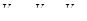 |
|
|
Вольтметр с цифровым табло |
|
V=Vn1−Vn2 |
|
|
Потенциометр |
|
|
|
|
Потенциометр с цифровым табло |
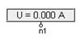 |
|
|
|
фазометр |
|
|
|
|
Фазометр с цифровым табло |
|
|
|
|
Ваттметр |
|
|
|
|
Ваттметр с цифровым табло |
|
|
|
Таблица 5.4
Многоуровневые измерители
|
Наименование |
Изображение на объектном уровне |
Изображение на логическом уровне |
Математическая модель |
|
Амперметр |
|
|
|
|
Вольтметр |
|
|
|
|
Омметр |
|
|
|
|
Ваттметр |
|
|
|
|
Потенциометр |
|
|
|
Таблица 5.5
Пассивные двухполюсники
|
Название |
Графическое изображение на объектном слое редактора |
Математическая модель |
Параметры |
|
Земля |
|
Vn1=0 |
|
|
Резистор R |
|
|
R – сопротивление |
|
Индуктивность L |
|
|
L – индуктивность |
|
Емкость С |
|
|
С – емкость |
|
Нелинейный
|
|
|
A, B, C – коэффициенты |
|
Нелинейный резистор RCUB |
|
|
A – коэффициент |
|
Нелинейный
|
|
|
A, B, C – коэффициенты |
|
Диод
|
|
|
R – сопротивление |
|
Взаимоиндуктивность, LM |
|
|
LK – индуктивность катушки, Гн; RK – омическое сопротивление катушки, Ом; VM – взаимная индукция |
Таблица 5.6
Пассивные четырехполюсники
|
Название |
Графическое изображение на объектном слое редактора |
Математическая модель |
Параметры |
|
Воздушный трансформатор , TRI |
|
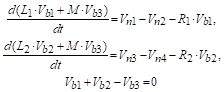 |
R1, R2 – сопротивления первичной и вторичной обмоток; L1, L2 – индуктивности первичной и вторичной обмоток; М – взаимоиндуктивность |
|
Трансформатор однофазный со средней точкой, TRFС |
|
|
KT1, KT2 – коэффициенты трансформации |
|
Трансформатор обобщенный, TR
|
|
|
a–коэффициент трансформации напряжения, d – коэффициент трансформации тока |
|
Трансформатор идеальный, TRI
|
|
|
а – коэффициент трансформации |
|
Гиратор обобщенный, GIR
|
|
|
с, d – коэффициенты |
|
Гиратор идеальный, GIRI |
|
|
B – коэффициент |
Таблица 5.7
Ключи и реле
|
Название |
Графическое изображение на объектном слое редактора |
Математическая модель |
Параметры |
|
Ключ K |
|
где:
|
R – сопротивление ключа, зависящее от его положения (замкнут или разомкнут) |
|
Выключатель S |
|
где:
|
t – текущее время моделирования; t1 – время замыкания; t2 – время размыкания; T=t1+t2 – период работы ключа, – количество целых периодов работы ключа. |
|
Включатель S |
|
|
t – текущее время моделирования; t1 – время замыкания; t2 – время размыкания; T=t1+t2 – период работы ключа, – количество целых периодов работы ключа. |
|
Ключ, управляемый напряжением SU |
|
где:
|
– заданное значение напряжения. |
|
Ключ, управляемый током SI |
|
где:
|
– заданное значение напряжения. |
|
Переключатель |
|
где:
|
P – положение переключателя. Р=1 – если переключатель замыкает выводы n1 и n2; P=2 – если переключатель замыкает выводы n1 и n3 |
Таблица 5.8
Электромагнитные элементы и блоки
|
Название |
Графическое изображение на объектном слое редактора |
Математическая модель |
Параметры |
|
Магнитное сопротивление |
|
где: магнитное сопротивление
|
– абсолютная магнитная проницаемость; l – длина магнитной цепи; S – площадь участка магнитной цепи; KЗС – коэффициент заполнения площади сечения магнитопровода ферромагнитных материалов. |
|
|
где: магнитное сопротивление
|
– абсолютная магнитная проницаемость; l – длина магнитной цепи; S – площадь участка магнитной цепи; KЗС – коэффициент заполнения площади сечения магнитопровода ферромагнитных материалов. |
|
|
Катушка с ферромагнитным сердечником |
|
|
h – ширина; d – толщина; l – длина; N – число витков |
|
Катушка с ферромагнитным сердечником (нелинейная модель) |
|
|
h – ширина; d – толщина; l – длина; N – число витков; x – точка перегиба; Km – наклон линейного участка; p – показатель степени. |
Таблица 5.9
Элементы аналоговой электроники
|
Название |
Графическое изображение на объектном слое редактора |
Математическая модель Параметры |
|
Диод |
|
где:
Rf – минимальное последовательное сопротивление, Ом; RY – сопротивление утечки; RZ - дифференциальное сопротивление на участке пробоя; VZ – напряжение стабилизации, В; VT – температурный потенциал перехода; IS – ток насыщения, А. |
|
Стабилитрон |
|
RS – объемное сопротивление p-n¬ перехода; IS – ток насыщения при температуре 270 С; ISr – параметр тока рекомбинации; nr – коэффициент эмиссии тока рекомбинации; Ikf – предельный ток при высоком уровне инжекции; Vj – контактная разность потенциалов; IVB – начальный ток пробоя; VB – обратное напряжение пробоя; NVN ¬– коэффициент неидеальности на участке пробоя; IVBL – начальный ток пробоя низкого уровня; NVBL – коэффициент неидеальности на участке пробоя низкого уровня; M – коэффициент лавинного умножения; Сj0 – барьерная емкость pn-перехода при нулевом смещении; FC – коэффициент нелинейности барьерной емкости прямосмещенного перехода; tt – время переноса заряда; |
|
Транзистор NPN (модель Эберса-Молла) |
|
UЭБ – напряжение эмиттерного pn-перехода; UКБ – напряжение коллекторного pn-перехода; IЭУ – ток утечки эмиттерного pn-перехода; IКУ – ток утечки коллекторного pn-перехода; RЭ – объемное сопротивление эмиттера; RK – объемное сопротивление коллектора; RБ – объемное сопротивление базы; RЭУ – омическое сопротивление утечки эмиттера; RКУ – омическое сопротивление утечки коллектора; СЭ – среднее значение барьерной емкости перехода эмиттер-база; CK – среднее значение барьерной емкости перехода коллектор-база; СЭД – нелинейная емкость эмиттерного pn-перехода; СКД – нелинейная емкость коллекторного pn-перехода; αN – нормальный коэффициент передачи в схеме с общей базой; αI – инверсный коэффициент передачи в схеме с общей базой; IЭН – эмиттерный тепловой ток; IКН – коллекторный тепловой ток; Т – абсолютная температура; τN – время пролета носителей через переход в прямом направлении; τI – время пролета носителей через переход в инверсном направлении; МЭ – коэффициент эмиссии перехода «Эмиттер-база»; МК – коэффициент эмиссии перехода «Коллектор-база». |
|
Транзистор NPN Spice-модель |
|
IS – ток насыщения при температуре 27 0С; BF – максимальный коэффициент усиления тока в нормальном режиме в схеме с общим эмиттером; BR – максимальный коэффициент усиления тока в инверсном режиме в схеме с общим эмиттером; NF – коэффициент неидеальности в нормальном режиме; NR – коэффициент неидеальности в инверсном режиме; ISE – ток насыщения утечки перехода база-эмиттер; ISC – ток насыщения утечки перехода база-коллектор; IKF – ток начала спада зависимости BF от тока коллектора в нормальном режиме IKR – ток начала спада зависимости BR от тока эмиттера в инверсном режиме; NE – коэффициент неидеальности перехода база-эмиттер; NC – коэффициент неидеальности перехода база-коллектор; NK – коэффициент, определяющий множитель Qb; VAF – напряжение Эрли в нормальном режиме; VAR – напряжение Эрли в инверсном режиме; RC – объемное сопротивление коллектора; RE – объемное сопротивление эмиттера; RB – объемное сопротивление базы (максимальное) при нулевом смещении перехода база-эмиттер; TF – время переноса заряда через базу в нормальном режиме; TR – время переноса заряда через базу в инверсном режиме; CJE – емкость эмиттерного перехода при нулевом смещении; VJE – контактная разность потенциалов перехода база-эмиттер; MJE – коэффициент, учитывающий плавность эмиттерного перехода; CJC – емкость коллекторного перехода при нулевом смещении; VJC – контактная разность потенциалов перехода база-коллектор; MJC – коэффициент, учитывающий плавность коллекторного перехода; FC – коэффициент нелинейности барьерных емкостей прямосмещенных переходов ITF – ток, характеризующий зависимость TF от тока коллектора при больших токах XTF – коэффициент, определяющий зависимость TF от смещения база-коллектор; VTF – напряжение, характеризующее зависимость TF от смещения база-коллектор; XCJC – коэффициент расщепления емкости база-коллектор |
|
Операционный усилитель |
|
Rвх – входное сопротивление операционного усилителя; К – коэффициент усиления; Uпор – пороговое напряжение; Rвых – выходное сопротивление. |
Таблица 5.10
Компоненты цифровой электроники
|
Название |
Графическое изображение на объектном слое редактора |
Математическая модель
|
|
Компонент
|
|
|
|
Компонент |
|
|
|
Компонент «ИЛИ» |
|
|
|
Компонент «И-НЕ» |
|
|
|
Компонент |
|
|
|
Компонент
|
|
|
|
RS-триггер
|
|
|
|
RS-триггер
|
|
|
|
RS-триггер двухступенчатый |
|
|
|
D-триггер |
|
|
|
D-триггер двухступенчатый |
|
|
|
JK-триггер |
|
|
|
Т-триггер |
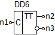 |
|
|
Полусумматор |
|
|
|
Модуль |
|
|
|
Формирователь импульсов |
|
|
Таблица 5.11
Компоненты электромеханики
|
Название |
Графическое изображение на объектном слое редактора |
Математическая модель[3]
и параметры
|
|
Трехфазный преобразователь |
|
Rr – сопротивление рассеяния; Ls – статическая индуктивность; Rs – статическое сопротивление; Lr – индуктивность рассеяния; p – число пар полюсов |
|
Двухфазный преобразователь |
|
Rr – сопротивление рассеяния; Lr – индуктивность рассеяния; Rs – статическое сопротивление; Ls – статическая индуктивность; М – взаимоиндуктивность. |
|
Управляемый ключ |
|
где:
R1 – сопротивление разомкнутого ключа; R2 – сопротивление замкнутого ключа. |
|
Источник для фазового управления |
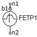 |
Генерирует прямоугольные импульсы с параметрами: E – амплитуда; f – частота; T0 – временная задержка; φ – угол управления |
|
Кривая намагничивания |
|
x1 – точка перегиба; Km – наклон линейного участка; p – степень показателя |
|
Реактивный
|
|
где:
MC – момент сопротивления |
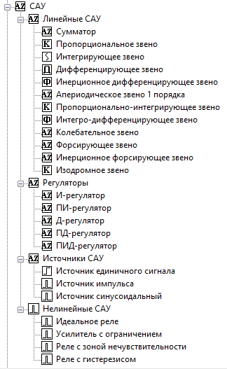
Таблица 5.12
Компоненты линейных САУ
|
Название |
Графическое изображение на объектном слое редактора |
Математическая модель |
Параметры |
|
Сумматор |
|
|
|
|
пропорциональное звено |
|
|
K – коэффициент усиления |
|
Интегрирующее звено |
|
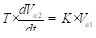 |
K – коэффициент усиления T – постоянная времени |
|
Дифференцирующее звено |
|
|
K – коэффициент усиления T – постоянная времени |
|
Инерционное дифференцирующее звено |
|
|
K1, K2 – коэффициенты усиления; T1, T2 – постоянные времени |
|
Апериодическое звено 1 порядка |
|
|
K – коэффициент усиления T – постоянная времени |
|
Колебательное звено |
|
|
K – коэффициент усиления; T – постоянная времени; d – коэффициент демпфирования |
|
Пропорционально-интегрирующее звено |
|
|
K – коэффициент усиления T – постоянная времени |
|
Интегро-дифференцирующее звено |
|
|
T1, T2 – постоянные времени |
|
Форсирующее звено |
|
|
K – коэффициент усиления T – постоянная времени |
|
Инерционное форсирующее звено |
|
|
K – коэффициент усиления T1, T2 – постоянные времени |
Таблица 5.13
Компоненты регуляторов
|
Название |
Графическое изображение на объектном слое редактора |
Математическая модель |
Параметры |
|
пропорциональный регулятор (П-регулятор) |
|
|
KP – коэффициент пропорциональности |
|
Интегральный регулятор (И-регулятор) |
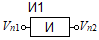 |
|
KI – коэффициент интегрирования |
|
Пропорционально-интегральный регулятор (ПИ-регулятор) |
|
|
KP – коэффициент пропорциональности KI – коэффициент интегрирования |
|
дифференциальный регулятор (Д-регулятор) |
|
|
KD – коэффициент дифференцирования |
|
Пропорционально-дифференциальный регулятор (ПД-регулятор) |
|
|
KP – коэффициент усиления; KD – коэффициент дифференцирования |
|
Пропорционально-интегрально-дифференциальный регулятор (ПИД-регулятор) |
|
|
KP – коэффициент усиления KI – коэффициент интегрирования KD – коэффициент дифференцирования |
Таблица 5.14
Источники для исследования САУ
|
Название |
Графическое изображение на объектном слое редактора |
Математическая модель |
Параметры |
|
Источник единичного сигнала |
|
|
t0 – время задержки сигнала |
|
Источник импульса |
|
|
t0 – время задержки сигнала h – шаг интегрирования |
Таблица 5.15
Нелинейные САУ
|
Название |
Графическое изображение на объектном слое редактора |
Математическая модель |
Параметры |
|
Идеальное реле |
|
|
|
|
Усилитель с ограничением |
|
|
– ограничение входного сигнала |
|
Реле с зоной нечувствительности |
|
|
– ограничение входного сигнала |
|
Реле с гистерезисом |
|
|
– ограничение входного сигнала |
Функциональный генератор – генератор, с помощью которого может задаваться сигнал трех форм:
|
Рисунок 5.1. Лицевая панель функционального генератора |
– синусоида;
– трапеция;
– треугольник.
Лицевая панель функционального генератора представлена на рис. 5.1. Управление параметрами функционального генератора осуществляется следующими органами управления:
- - выбор формы сигнала (по умолчанию устанавливается синусоида);
- - установка амплитуды выходного сигнала. С помощью комбинированного списка устанавливается единица измерения амплитуды, которая может быть задана в микровольтах (мкВ), милливольтах (мВ), вольтах (В), киловольтах (кВ), мегавольтах (МВ);
-
 -
устанавливается частота сигнала, которая может быть задана в герцах
(Гц), килогерцах (кГц) или мегагерцах (МГц). Единица измерения
частоты задается с помощью комбинированного списка;
-
устанавливается частота сигнала, которая может быть задана в герцах
(Гц), килогерцах (кГц) или мегагерцах (МГц). Единица измерения
частоты задается с помощью комбинированного списка;
|
Рисунок 5.2. Лицевая панель генератора |
-
 -
устанавливается коэффициент заполнения в %; для прямоугольного сигнала
это отношение длительности импульса к периоду повторения - величина,
обратная скважности; для треугольных сигналов – соотношение между
длительностями переднего и заднего фронтов;
-
устанавливается коэффициент заполнения в %; для прямоугольного сигнала
это отношение длительности импульса к периоду повторения - величина,
обратная скважности; для треугольных сигналов – соотношение между
длительностями переднего и заднего фронтов;
- - установка смещения (постоянной составляющей) выходного сигнала.
Генератор сигнала произвольного вида предназначен для формирования импульса, основанного на ломаной линии, состоящей из пяти точек. Для каждой из точек задается значение сигнала в данной точке и значение времени, в которое должно быть данное значение на выходе генератора. Полученная кривая повторяется периодически. Панель управления параметрами генератора представлена на рис. 5.2.
Для каждой из пяти точек периода сигнала задаются следующие параметры:
– значение сигнала в точке. Оно может быть задано в микровольтах (мкВ), милливольтах (мВ), вольтах (В), киловольтах (кВ) и мегавольтах (МВ);
– значение времени, в которое наступает заданное значение напряжения. Время может быть задано в микросекундах (мкс), миллисекундах (мс) или в секундах (с).
Мультиметр – виртуальный измерительный прибор, который позволяет измерять следующий ряд величин:
|
Рисунок 5.3 Лицевая панель мультиметра |
– напряжение;
– ток;
– сопротивление;
– мощность;
– разность фаз между током и напряжением.
Лицевая панель мультиметра представлена на рис. 5.3. Выбор измеряемой величины производится органом управления .
|
Рисунок 5.4. Схема включения мультиметра |
Мультиметр имеет три вывода и включается в цепь последовательно токовыми выводами 1–2, и параллельно - потенциальными выводами 1–3 (рис. 5.5.1.4). Следовательно, между выводами 1–2 внутреннее сопротивление мультиметра равно нулю, а между выводами 1–3 - сопротивление равно бесконечности.
Мультиметр может работать в трех режимах.
1. В статическом временном режиме измеряется постоянное значение тока или напряжения, по этим данным рассчитывается выбранная величина.
2. В динамическом временном режиме измеряются действующие значения тока и напряжения, по которым находится необходимая величина.
3. В частотном режиме для анализируемой частоты находятся амплитуды тока и напряжения, по которым производится расчет величины.
|
Рисунок
5.5. Лицевая панель |
Универсальный измеритель мощности (рис. 5.5) – прибор, измеряющий следующие виды мощностей:
– полную;
– активную;
– реактивную.
Вид мощности, которую измеряет прибор в данный момент, выбирается органом управления .
|
Рисунок
5.6. Схема подключения |
Универсальный измеритель мощности имеет три вывода, включается в схему последовательно токовой парой выводов 1–2 и параллельно – потенциальной парой выводов 1–3 (рис. 5.6).
Прибор может работать только в частотном режиме как при статическом расчете на частоте источника синусоидального сигнала, так и при проведении эксперимента в частотной области на частоте функционального генератора.
|
Рисунок 5.7. Одноканальный осциллограф |
Одноканальный осциллограф позволяет визуализировать форму напряжения или тока на определенном участке цепи. Для этих целей прибор имеет лицевую панель, пред-ставленную на рис. 5.7.
|
Рисунок
5.8. Схема включения |
Осциллограф работает только во временном динамическом режиме и позволяет визуализировать как напряжение, так и ток в определенном участке цепи. Для переключения режимов визуализации переменных между напряжением и током необходимо воспользоваться органом управления . Одноканальный осциллограф включается в цепь согласно рис. 5.8.
Управление параметрами осуществляется следующими органами управления:
– – длительность развертки может варьироваться от 1 мкс до 1000 с;
– – усиление сигнала определяется масштабом на экране осциллографа по оси ординат. С помощью первого комбинированного списка задается мантисса усиления, которая может быть равна 1, 2 или 5. С помощью второго - задается порядок усиления сигнала, диапазон изменения порядка лежит от 10–6 до 106;
– – смещение сигнала относительно 0. Цифровое табло со спином задает мантиссу смещения сигнала, которая может изменяться от –10 до 10 с шагом 1. Комбинированный список задает порядок смещения, диапазон изменения которого лежит в пределах от 10–6 до 106.
Двухканальный осциллограф – прибор для визуализации формы двух напряжений или токов. Двухканальный осциллограф имеет лицевую панель, представленную на рис. 5.9.
|
Рисунок 5.9. Лицевая панель двухканального осциллографа
|
Осциллограф позволяет просматривать оба графика в одном временном масштабе. Для этого задается развертка с помощью органов управления . С помощью цифрового табло со спином численно задается значение времени развертки, а с помощью комбинированного списка задается единица измерения развертки, которая может быть выражена в секундах (с), миллисекундах (мс) или микросекундах (мкс).
Для каждого из сигналов задаются его усиление и смещение.
Усиление сигнала задается с помощью органов управления . С помощью первого комбинированного списка задается мантисса усиления, которая может принимать значение 1, 2 или 5. С помощью второго списка задается порядок усиления сигнала, который может варьироваться от 10–6 до 106.
Смещение сигнала относительно нуля задается с помощью органов управления . С помощью цифрового табло со спином задается мантисса смещения сигнала, которая может изменяться от –10 до 10, а с помощью комбинированного списка задается порядок усиления смещения, который меняется от 10–6 до 106.
|
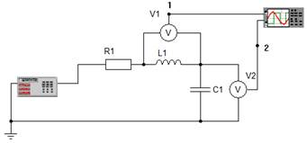 Рисунок 510. Схема включения двухканального осциллографа |
Выбор сигнала, по которому устанавливаются метки по оси ординат, устанавливается органом управления . График с номером 1 отображается в окне осциллографа красным цветом. Второй график отображается зеленым цветом. Пример включения двухканального осциллографа приведен на рис. 5.10.
|
Рисунок 5.11. Лицевая панель построителя частотных характеристик |
Построитель частотных характеристик
(рис. 5.11) предназначен для построения основных частотных
характеристик, к которым относятся амплитудно-частотная и
фазочастотная характеристики. Частотные характеристики могут быть
построены как для напряжения, так и для тока в заданной точке схемы.
Выбор между током и напряжением производится с помощью органа
управления
 .
.
Прибор имеет три узла для включения в схему (рис. 5.11).
|
Рисунок
5.12. Схема включения |
Диапазон частот, в котором производится построение частотных характеристик, производится путем задания минимальной и максимальной частот этого диапазона. Минимальная частота задается с помощью органов управления . Максимальная частота задается с помощью органов управления . С помощью цифрового табло со спином задается численное значение частоты, которое может изменяться от 1 до 1000. С помощью комбинированного списка задается единица измерения частоты, которая может соответствовать герцам (Гц), килогерцам (кГц) или мегагерцам (МГц).
Управление амплитудно-частотной характеристикой производится с помощью усиления сигнала и его смещения относительно начала координат. Усиление сигнала указывает размер одной ячейки по оси ординат и задается с помощью органов управления . С помощью первого комбинированного списка задается мантисса усиления сигнала, которая может соответствовать 1, 2 или 5. С помощью второго задается порядок усиления сигнала, который изменяется от 10–6 до 106.
С помощью органов управления
задается смещение сигнала относительно оси ординат. С помощью
цифрового табло со спином задается мантисса смещения, которая может
изменяться от
–10 до 10. С помощью комбинированного списка задается порядок смещения сигнала, который может варьироваться от 10–6 до
106. Для построение амплитудно-частотной характеристики в полулогарифмическом
масштабе необходимо воспользоваться органом управления .
Управление масштабом фазочастотной характеристики производится с помощью органа управления . Он предоставляет возможность построить ФЧХ в двух масштабах: и .
Спектроанализатор позволяет разложить проходящий через него гармонический сигнал в ряд Фурье (рис. 5.13).
Фундаментальная частота, относительно которой прибор производит разложение измеряемого сигнала в ряд Фурье, задается
органами управления .
Число первых рассчитываемых гармоник задается с помощью органа управления .
Рисунок 5.13. Лицевая панель спектроанализатора
Усиление сигнала, соответствующее размеру одной клетки по оси ординат, задается с помощью органа управления .
Для получения результатов спектрального анализа в табличном виде необходимо нажать на кнопку . Кнопкой производится очистка таблицы. Схема включения спектроанализатора в цепь приведена на рис. 5.14.
Рисунок 5.14. Схема включения спектроанализатора в цепь
По генератору моделей компонентов сформирована отдельная инструкция.[TG6]
Макрокомпонентом называется набор компонентов, объединенных между собой для выполнения определенной функции и представляющих один компонент с точки зрения взаимодействия с ним в схеме.
В данной программе присутствуют практически все операции для работы с макрокомпонентами.
Основные операции при работе с макрокомпонентами следующие:
– создание макрокомпонентов;
– использование макрокомпонентов;
– упорядочивание макрокомпонентов.
Для создания макрокомпонента необходимо:
– создать схему;
– нанести на схему компонент Интерфейс;
– нанести все компоненты, которые должны принадлежать данному макрокомпоненту;
– установить входные связи с левыми узлами компонента Интерфейс, а выходные - с правыми узлами;
– с помощью атрибутов компонента Интерфейс установить необходимые свойства будущего макрокомпонента;
– подменю Файл главного меню выбрать команду Сохранить как макрокомпонент...;
– в окне Сохранение макрокомпонента (рис. 6.1) ввести название макрокомпонента и имя файла;
– нажать ОК.
Рисунок 6.1 – Диалоговое окно Сохранение макрокомпонента
Примечание: функция сохранения новых макрокомпонентов может не работать, если папка, в которой располагаются макрокомпоненты, защищена от записи.
Для использования созданных ранее макрокомпонентов необходимо:
– в дереве компонент во вкладке Макрокомпоненты выбрать необходимый макрокомпонент;
– установить макрокомпонент на схему.
При запуске схемы необходимо учитывать расположение текущего фокуса ввода:
– для запуска всей схемы необходимо, чтобы фокус ввода был на основной схеме;
– для запуска только макрокомпонента – на макрокомпоненте.
Задача: Требуется определить значения коэффициентов ПИД-регулятора, обеспечивающего разгон миксера при заданной нагрузке до заданной скорости вращения за минимально возможное время.
Шаг 1. Построение формализованного представления задачи. Сформулированная задача относится к классу задач параметрического синтеза при варьировании коэффициентов ПИД-регулятора. При этом, путем изменения коэффициентов ПИД-регулятора необходимо установить заданную пользователем скорость вращения лопасти миксера, а также замерить и вывести на панель визуализации и интерактивного управления значения времени переходного процесса, в течении которого должен быть осуществлен разгон лопасти миксера до нужной скорости. Для решения этой задачи при варьировании коэффициентов ПИД-регулятора предложено компонентом «Оптимизатор» осуществить минимизацию целевой функции вида
(7.1)
где – текущее установившееся значение скорости вращения лопасти миксера; – требуемое значение скорости вращения лопасти миксера; – пропорциональный, интегральный и дифференциальный коэффициенты ПИД-регулятора;
Шаг 2. Разработка модели исследуемого объекта. Модель исследуемого объекта «Миксер на электроприводе» формируется на объектном уровне многоуровневой компьютерной модели из компонентов языка моделирования технических объектов, хранящихся в папке «ЭлектроСАУ» папки «САУ». Представленная на рисунке 7.1, она включает в себя следующие компоненты:
Рисунок 7.1 – Система автоматического управления «Миксер на электроприводе»
– E1 – источник задающего воздействия;
– PID1 – ПИД-регулятор, осуществляющий регулирование подачи напряжения на электромеханический преобразователь;
– EMU1 – электромагнитный преобразователь, осуществляющий преобразование электрической энергии в энергию магнитного поля;
– DR1 – двигатель, осуществляющий преобразование энергии магнитного поля в механическую энергию, необходимую для вращения лопасти миксера;
– V1 – лопасть миксера;
– D1 – демпфер, отражающий сопротивление среды, в которой находится лопасть миксера;
– TG1 – тахогенератор, осуществляющий измерение текущей скорости вращения вала лопасти миксера и передающий его в обратную связь;
– KU1 – усилитель сигнала обратной связи.
Шаг 3. Формирование компонентной цепи сценария исследования и проектирования УТО. Для решения сформулированной задачи параметрической оптимизации на логическом уровне многоуровневой компьютерной модели сформирована алгоритмическая компонентная цепь, представленная на рисунке 7.2.
Рисунок 7.2
– Алгоритмическая компонентная цепь
для решения задачи параметрической оптимизации
Регуляторами R1 «P», R2 «I», R3 «D» пользователь на визуальном слое редактора во время работы модели задает начальные значения коэффициентов ПИД-регулятора. Значения коэффициентов во время работы оптимизатора визуализируются как при помощи выше перечисленных регуляторов, так и при помощи цифровых табло Т1, Т2 и Т3. С помощью регулятора R4 пользователем на визуальном слое задается необходимое значение скорости вращения лопасти миксера. Запуск решения оптимизационной задачи осуществляется пользователем с визуального слоя путем нажатия на кнопку В1 «Запуск».
Результаты моделирования в виде текущего значения скорости вращения лопасти миксера и ошибки между задающим воздействием (источник Е1) и сигнала, пропорционального скорости вращения лопасти миксера и снимаемого с тахогенератора TG1, передаются с объектного на логический уровень компонентами U1 и V2. Данные значения отображаются пользователю на визуальном уровне многоуровневой компьютерной модели с помощью цифровых табло Т4 «Значение» и Т5 «Рассогласование» соответственно.
Для определения установившегося значения при каждом анализе модели объектного уровня используется компонент FV1, а для нахождения времени переходного процесса – компонент ТРР1. Для отображения на визуальном уровне времени переходного процесса используется цифровое табло Т6 «Tpp», а вывод установившегося значения осуществляется цифровым табло Т7 «Wуст».
Расчет целевой функции (7.1), составленной относительно текущего и требуемого установившихся значений, осуществляется математической панелью «Расчет» CF, включенной в папку Математические панели каталога Компоненты языка МАК. Текущее рассчитанное значение целевой функции передается компоненту Оптимизатор CD на логическом уровне многоуровневой компьютерной модели (рис. 7.2), в котором реализован метод покоординатного спуска. Он путём варьирования параметров ПИД-регулятора PID1 (рис. 7.1) с помощью соответствующих компонентов-атрибутов PID1:Kp, PID1:Ki, PID1:Kd осуществляет поиск целевой функции, значения которой поступают к компоненту Оптимизатор CD по связи от компонента Расчет CF. Визуализация текущего значения целевой функции осуществляется цифровым табло Т8 «Цел_функция».
Шаг 4. Разработка панели визуализации и интерактивного управления. На рис. 7.3 представлена панель визуализации и интерактивного управления модели решения задачи оптимизации скорости вращения лопасти миксера. Она содержит:
– цифровое табло T1 «Р» для отображения текущего значения пропорционального коэффициента ПИД-регулятора;
– цифровое табло Т2 «I» для визуализации текущего значения интегрального коэффициента ПИД-регулятора;
Рисунок 7.3 – Панель визуализации и интерактивного управления многоуровневой модели решения задачи оптимизации скорости вращения лопасти миксера
– цифровое табло Т3 «D» для отображения текущего значения дифференциального коэффициента ПИД-регулятора;
– цифровое табло Т4 «Значение» для отображения текущего значения скорости вращения лопасти миксера;
– цифровое табло Т5 «Рассогласование» для визуализации текущего значения ошибки управления;
– цифровое табло Т6 «Трр» для визуализации времени переходного процесса;
– цифровое табло Т7 «Wуст» для отображения установившегося значения скорости вращения лопасти миксера;
– цифровое табло Т8 «Цел_функция» для отображения текущего значения целевой функции;
– регулятор R1 «P» для установки начального значения пропорционального коэффициента ПИД-регулятора;
– регулятор R2 «I» для установки начального значения интегрального коэффициента ПИД-регулятора;
– регулятор R3 «D» для установки начального значения дифференциального коэффициента ПИД-регулятора;
– регулятор R4 «w*» для установки требуемой скорости вращения лопастей миксера;
– кнопка В1 «Запуск» для запуска очередной итерации процесса оптимизации.
Шаг 5. Запуск модели на анализ. Для запуска модели на анализ пользователь должен нажать кнопку . Задавая значения требуемой скорости вращения лопасти миксера w* при нажатии на кнопку осуществляется запуск задачи поиска коэффициентов ПИД-регулятора, при которых скорость вращения лопасти миксера Wуст будет соответствовать заданной скорости вращения.
Шаги 6-11. Шаги 6-11 алгоритма эксперимента в среде многоуровневого компьютерного моделирования выполняются автоматически. При этом на шаге 10 осуществляется опрос компонентов-регуляторов визуального уровня на предмет действий пользователя с ними.
Шаг 12. Установка рассчитанных значений параметров компонентов объектного уровня выполняется автоматически путем передачи текущих значений коэффициентов ПИД-регулятора от компонента «Оптимизатор» соответствующим компонентам-атрибутам (рис. 7.4)
Рисунок 7.4 – Атрибутный компонент компонента объектного уровня
Шаг 13. Архивирование полученных значений варьируемых параметров выполняется, когда на логическом уровне располагаются компоненты взаимосвязи с базами данных и другими хранилищами данных, в которые могут быть занесены параметры.
Шаг 14. Документирование результатов исследований. Для выполнения этого шага на логическом уровне многоуровневой компьютерной модели среди прочих должны находиться компоненты системы автоматического документирования.
Виртуальным прибором (ВП) в среде многоуровневого компьютерного моделирования называется макрокомпонент, встраиваемый в модель исследуемого технического объекта, имеющий оконный интерфейс, имитирующий на компьютере логику работы реального приборы, и предназначенный для генерации сигналов на исследуемую модель технического объекта. По аналогии с реальными приборами ВП содержит:
– лицевую панель, представляющую собой замкнутую экранную область, в которой производится визуализация результатов моделирования, а также располагаются органы управления параметрами и характеристиками прибора;
– модель алгоритма функционирования прибора, осуществляющую обработку поступающих в прибор данных для их вывода на лицевую панель или подготовку информации для ее передачи на исследуемую с помощью прибора модель
– интерфейс взаимодействия с моделью, представляющий собой выводы прибора для его подсоединения к необходимым для исследования точкам модели.
Построение любого виртуального прибора генераторного или измерительного типа осуществляется в структуре многоуровневой компьютерной модели, представленной на рисунке 1.2. Каждый ее уровень содержит (рис. 7.5)
Рисунок 7.5 – Многоуровневое представление виртуального прибора
|
Рисунок 7.6 – Компонент «Интерфейс» для создания виртуальных приборов в виде макрокомпонентов |
– Визуальный уровень многоуровневой КЦ ВП содержит его лицевую панель, состоящую из визуальных компонентов отображения данных в понятном пользователю виде, и органов интерактивного управления параметрами и характеристиками прибора.
– На её логическом уровне располагается сценарий функционирования прибора, представляющий собой одну или несколько визуально не связанных между собой алгоритмических компонентных цепей;
– Объектный уровень представляет собой интерфейс ВП с исследуемой моделью объекта.
Представленная на рис. 7.5 структура с помощью компонента «Интерфейс» (рис. 7.6) может быть обособлена в конкретный виртуальный прибор, представляющий собой макрокомпонент.
Последовательность действий пользователя при формировании виртуального прибора приведена на рисунке 15.10.

Рисунок 7.7 – Последовательность действий пользователя при создании виртуального прибора
Представленную на рис. 7.7 последовательность действий пользователя рассмотрим на примере создания виртуального прибора «Мультиметр», предназначенного для измерения текущих значений основных характеристик электрических цепей:
|
Рисунок 7.8
– Лицевая панель виртуального прибора |
1. Составление технического задания на прибор «Мультиметр». Мультиметр – это виртуальный прибор, предназначенный для измерения текущих (для постоянного тока) и действующих (для переменного тока) значений напряжения, тока, активного сопротивления и активной мощности. Создаваемый прибор должен обладать следующими характеристиками: диапазон измерения напряжения – 1 мкВ – 1 МВ; диапазон измерения тока от 1мкА до 1 МА; диапазон измерения активного сопротивления – 1 пОм до 1 Том; диапазон измерения активной мощности от 1 пВт до 1 ТВт.
2. Формирование лицевой панели прибора. Лицевая панель ВП «Мультиметр» (рис. 7.8) включает в себя следующие элементы:
– Цифровое табло «Значение», осуществляющее вывод необходимого измеряемого значения;
– Комбинированный список «Величина», позволяющий выбирать необходимую для измерения и визуализации характеристику исследуемого участка электрической цепи
– Комбинированный список «Форма представления», предоставляющий возможность выбирать форму представления вещественного числа: с фиксированной запятой или с плавающей запятой;
– Цифровое табло со спином «Число знаков», позволяющее изменять количество знаков после запятой в визуализируемом значении.
|
Рисунок 7.9 –
Алгоритмическая |
3. Формирование сценария функционирования прибора осуществляется с применением компонентов языка моделирования алгоритмических конструкций и измерительных компонентов языка моделирования УТО. В представленной на рис. 7.9 алгоритмической компонентной цепи функционирования ВП «Мультиметр» используются следующие компоненты (названия компонентов выделены курсивом):
– Вольтметр V1 и амперметр А1 используются для измерения напряжения U1 и тока I1 соответственно в ветви, в которую включен ВП «Мультиметр» для исследования её характеристик;
– Деление DIV1 применяется для определения сопротивления
– Умножение MULT1 позволяет вычислить мощность, потребляемую исследуемой ветвью
– С помощью комбинированного списка L1 пользователем на визуальном уровне выбирается измеряемая характеристика обозначенной ветви электрической цепи. Каждой характеристике соответствует определенный порядковый номер: 0 – напряжение, 1 – ток, 2 – сопротивление, 3 – мощность;
– Алгоритмический ключ S1 осуществляет передачу на свой единственный выход значения, пришедшего на информационный вход, номер которого был передан последним комбинированным списком L1;
– Цифровое табло Т1 предназначено для визуализации полученного значения на лицевой панели виртуального прибора.
Для настройки параметров цифрового табло Т1, осуществляющего вывод результата на лицевую панель прибора, используются:
– комбинированный список L2, позволяющий выбрать одну из форм представления вещественного числа: 0 – фиксированная запятая, 1 – плавающая запятая. Его выход подключен к компоненту-атрибуту Т1: формат числа (рис. 7.11).
|
Рисунок 7.10 –Установка количества знаков после запятой |
|
Рисунок 7.11 –
|
– цифровое табло со спином Т2 предназначено для установки количества знаком после запятой в визуализируемом результате. Установка соответствующего значения в качестве атрибута цифрового табло Т1 производится с помощью цепи, представленной на рис. 7.11.
|
Рисунок 7.12 – |
4. Формирование интерфейсных связей с исследуемой моделью осуществляется на объектном уровне многоуровневой КЦ ВП. Её компонентная подцепь объектного уровня, полученная в результате установки связей измерительных компонентов – вольтметра V1 и амперметра A1 с компонентом «Интерфейс», приведена на рис. 7.12. Компонент «Интерфейс» выражает формируемый компонент со связями на схеме, в которую будет установлен формируемый макрокомпонент.
5. Добавление прибора в библиотеку осуществляется при помощи пункта Сохранить как макрокомпонент меню Файл. Работа с марокомпонентами описана в пункте 6.3. При выполнении этих действий в пункт Макрокомпоненты дерева компонентов будет добавлен компонент «Мультиметр». При его установки на схему он будет иметь вид, представленный на рис. 7.13.
Рисунок 7.13 – Компонент «ВП Мультиметр»
6. Для тестирования прибора «Мультиметр» сформирована компонентная цепь электрической цепи постоянного тока, представленная на рисунке 7.14.
Рисунок 7.14 – Компьютерная модель электрической цепи для
тестирования виртуального прибора «Мультиметр»
С помощью виртуального прибора «Мультиметр» в представленной на рис. 7.14 компонентной цепи измерению подлежат все характеристики сопротивления R2. Результаты измерения представлены на рисунках 15.18, а-г.
|
а) |
б) |
|
в) |
г) |
|
Рисунок 7.15 – Тестирование виртуального прибора «Мультиметр» а) в режиме измерения напряжения; б) в режиме измерения тока; в) в режиме измерения сопротивления; г) в режиме измерения мощности
|
|
Далее (после отработки инструкции) надо открыть и наполнять Альбом тестовых приложений, тщательно отрабатывая каждый тест
Минимальные системные требования:
Процессор: c двумя и более физическими ядрами, поддерживающий технологию SSE2
Видеокарта: GeForce 8600/ATI Radeon HD 4550M
Оперативная память: 2 ГБ для Windows 7/8/10
Операционная система: Windows 7/8/10
Место на диске: 40 ГБ
Рекомендуемые системные требования:
Процессор: Intel Core i5-7400 / AMD Ryzen 5 1500X
Видеокарта: NVIDIA® GeForce GTX 1050 Ti 4 ГБ / NVIDIA® GeForce GTX 1650 4 ГБ / Radeon RX 570 (4 ГБ)
Оперативная память: 8 Гб
Операционная система: Windows 7/8/10 — 64-bit
Место на диске: 61.5 ГБ
Скорость интернет-соединения: 1024 Кбит/с или выше (для работы голосового чата)